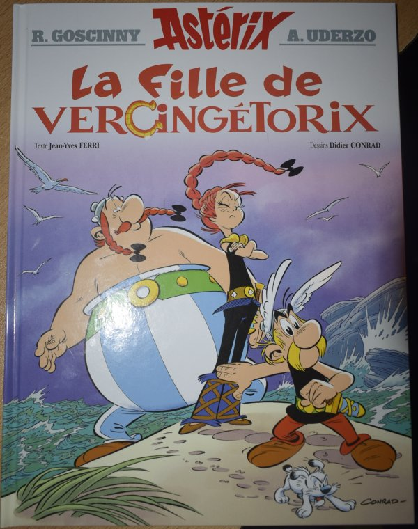
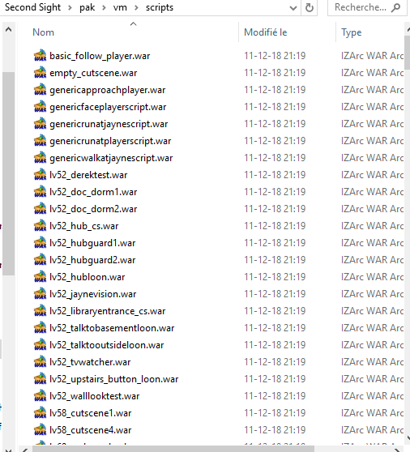

![[ANA JDG] Asterix and the Great Rescue - Megadrive](../vi/6oUXi0ckLmA/default.jpg)
![[ Présentation pour la chaîne Grenier des Joueurs ] JDG Prod](../art/SHAR.6419.583.2.jpg)


Afin de créditer une bonne fois pour toute les personnes à l'origine de mon matériel poopesque (et pour mettre fin à un soucis éthique ), je me permet de citer ici l'ensemble des sources, fan-arts et musiques que j'ai employé dans mes YTPs sur la chaîne "Poopulaire" et "Les petites YTPs de Glin" !
SOURCES
Parties Sources
FAN-ARTS
" Luke Triton " de Nyaasu : https://www.deviantart.com/nyaasu/art/Luke-Triton-197678376
" エルシャール・レイトン " (traduction: Hershall Leighton ) de 山寺宏一 (traduction: Koichi Yamadera) : https://natalie.mu/comic/gallery/news/284644/936253
Des emotes Professeur Layton dont la paternité n'est pas reconnue: https://monobrobe.tumblr.com/post/51588951342/i-hope-no-one-else-has-already-uploaded-this-but
"those brothers have very handsome strides" de Sleepyotter : https://otter-quadrent.tumblr.com/post/118849833700/those-brothers-have-very-handsome-strides-i-dont
Pleins de poses de Layton, Emmy et Luke de n0n01o3 : https://n0n01o3.tumblr.com/post/156495106130
" Layton Kyouju to Eien no Utahime - Luke Triton - Plush (Size Small) "de San-ei : https://solarisjapan.com/products/layton-kyouju-to-eien-no-utahime-luke-triton-plush-size-small-san-ei
" Layton Kyouju to Eien no Utahime - Hershel Layton - Plush (Size Small) " de San-ei : https://solarisjapan.com/products/layton-kyouju-to-eien-no-utahime-hershel-layton-plush-size-small-san-ei
" PL vs AA is coming!!! " de zillabean : https://www.deviantart.com/zillabean/art/PL-vs-AA-is-coming-478599805
" Layton - stylized " de vdburg : https://www.deviantart.com/vdburg/art/Layton-stylized-561313925
" Layton Cosplay " de toddleart : https://www.deviantart.com/toddleart/art/Layton-Cosplay-550169933
" Layton " de danfoxx : https://www.deviantart.com/danfoxx/art/Layton-614282452
" Layton X SAW spoof " de meru-chan : https://www.deviantart.com/meru-chan/art/Layton-X-SAW-spoof-175303461
" Layton " de peaceelectronics : https://www.deviantart.com/peaceelectronics/art/Layton-667807314
" layton " de dreamstation369 : https://www.deviantart.com/dreamstation369/art/layton-217389460
" Puzzled Professor " de zillabean : https://www.deviantart.com/zillabean/art/Puzzled-Professor-181508928
" Puzzled Professor " de zillabean : https://www.deviantart.com/zillabean/art/Puzzled-Professor-181508928
" 006. Tower " de luphin : https://www.deviantart.com/luphin/art/006-Tower-263575642
" Men's best friends " de zillabean : https://www.deviantart.com/zillabean/art/Men-s-best-friends-408194467
" LAYTON NONSENSE " de zillabean : https://www.deviantart.com/zillabean/art/LAYTON-NONSENSE-183357142
" A fun crossover adventure " de c-puff : https://www.deviantart.com/c-puff/art/A-fun-crossover-adventure-590954826
" Laytoned.gif " de daycolors : https://www.deviantart.com/daycolors/art/Laytoned-gif-836076343
" Layton " de thedamn-thinguy : https://www.deviantart.com/thedamn-thinguy/art/Layton-394287593
" Layton " de super-cute : https://www.deviantart.com/super-cute/art/Layton-151291882
" Layton " de narista : https://www.deviantart.com/narista/art/Layton-132516919
" Layton Valentines " de drunkpugs : https://www.deviantart.com/drunkpugs/art/Layton-Valentines-432011996
" layton is angryyyyy " de spongebobluvr66 : https://www.deviantart.com/spongebobluvr66/art/layton-is-angryyyyy-216873518
" layton's apprentice " de superpandaman : https://www.deviantart.com/superpandaman/art/layton-s-apprentice-181360250
" Layton Simplified " de larissaxarnhem : https://www.deviantart.com/larissaxarnhem/art/Layton-Simplified-331542958
" Layton and Descole " de descolefan1 : https://www.deviantart.com/descolefan1/art/Layton-and-Descole-361689722
" Professor Layton " de mightymola : https://www.deviantart.com/mightymola/art/Professor-Layton-561874195
" Commission: Descole " de lucariofan1996 : https://www.deviantart.com/lucariofan1996/art/Commission-Descole-492983422
" layton and luke " de kimchi1uva : https://www.deviantart.com/kimchi1uva/art/layton-and-luke-177731133
" Layton " de trophy-sketcher : https://www.deviantart.com/trophy-sketcher/art/Layton-608922172
" Layton 1 " de fox-in-boots : https://www.deviantart.com/fox-in-boots/art/Layton-1-186946248
" It's Casual Friday " de zillabean : https://www.deviantart.com/zillabean/art/It-s-Casual-Friday-415256313
" Professor Layton. " de aqua-aquaria : https://www.deviantart.com/aqua-aquaria/art/Professor-Layton-479126437
" Chibi Layton is Watching " de zillabean : https://www.deviantart.com/zillabean/art/Chibi-Layton-is-Watching-217220463
" ''W-well, that's....'' " de labrelum : https://www.deviantart.com/labrelum/art/W-well-that-s-782772341
" Professor Layton smashified! " de jdmh : https://www.deviantart.com/jdmh/art/Professor-Layton-smashified-675577170
" Object to THIS " de zillabean : https://www.deviantart.com/zillabean/art/Object-to-THIS-340557533
" Prof. Layton " de artist-squared : https://www.deviantart.com/artist-squared/art/Prof-Layton-558125047
" Into the Great Wide Open " de zillabean : https://www.deviantart.com/zillabean/art/Into-the-Great-Wide-Open-287908477
" Professor Layton Smashified (Transparent) " de shinfurevindo : https://www.deviantart.com/shinfurevindo/art/Professor-Layton-Smashified-Transparent-571500460
" layton in minecraft " de maimai030 : https://www.deviantart.com/maimai030/art/layton-in-minecraft-341001946
" Professor Layton Practice " de forevvermore : https://www.deviantart.com/forevvermore/art/Professor-Layton-Practice-504441898
" Layton " de digimonfanatic12 : https://www.deviantart.com/digimonfanatic12/art/Layton-298099379
" Professor Layton " de zimokitoka : https://www.deviantart.com/zimokitoka/art/Professor-Layton-826244251
" Layton Win " de horseman1 : https://www.deviantart.com/horseman1/art/Layton-Win-178266059
" Hershel Layton " de wildragon : https://www.deviantart.com/wildragon/art/Hershel-Layton-483987736
" Layton " de kirbro : https://www.deviantart.com/kirbro/art/Layton-669351313
" Descole And Me " de shmemilyemily : https://www.deviantart.com/shmemilyemily/art/Descole-And-Me-667003014
" Descole " de artist-squared : https://www.deviantart.com/artist-squared/art/Descole-558207388
" Descoles mask " de professoraurabolt : https://www.deviantart.com/professoraurabolt/art/Descoles-mask-353129943
" Descole " de lubly-descole : https://www.deviantart.com/lubly-descole/art/Descole-413993759
" Descole " de kirbro : https://www.deviantart.com/kirbro/art/Descole-632166149
" descole incorrect ANIMATED " de spongebobluvr66 : https://www.deviantart.com/spongebobluvr66/art/descole-incorrect-ANIMATED-263845489
" descoles golden garden " de spongebobluvr66 : https://www.deviantart.com/spongebobluvr66/art/descoles-golden-garden-267641852
" ::descole what are you doing:: " de cockneys : https://www.deviantart.com/cockneys/art/descole-what-are-you-doing-270228397
" descole is a pervet " de thelunnaworld : https://www.deviantart.com/thelunnaworld/art/descole-is-a-pervet-266746844
" Descole's Handwriting " de ultimateshadow111 : https://www.deviantart.com/ultimateshadow111/art/Descole-s-Handwriting-324466284
" descoles cool " de spongebobluvr66 : https://www.deviantart.com/spongebobluvr66/art/descoles-cool-217144049
" Kiriban - Call Me Descole " de samcybercat : https://www.deviantart.com/samcybercat/art/Kiriban-Call-Me-Descole-574742984
" Descole " de suicidal-zombie : https://www.deviantart.com/suicidal-zombie/art/Descole-355187229
" Descole - Old Spice " de kurootsukki : https://www.deviantart.com/kurootsukki/art/Descole-Old-Spice-432456666
" This Reminds Me of a ... " de citrouilleskull : https://www.deviantart.com/citrouilleskull/art/This-Reminds-Me-of-a-492403760
" Descole " de mrsaturn420 : https://www.deviantart.com/mrsaturn420/art/Descole-293293104
" bubbly descole " de spongebobluvr66 : https://www.deviantart.com/spongebobluvr66/art/bubbly-descole-217221309
" ~Request~ By Jove You've Wrecked My Robot " de northely : https://www.deviantart.com/northely/art/Request-By-Jove-You-ve-Wrecked-My-Robot-660725915
" Poor Descole " de dkleviathan : https://www.deviantart.com/dkleviathan/art/Poor-Descole-313464066
" After Drinking - DesLay ~~Cosplay " de the-man-with-the-hat : https://www.deviantart.com/the-man-with-the-hat/art/After-Drinking-DesLay-Cosplay-370774775
" thorns " de spongebobluvr66 : https://www.deviantart.com/spongebobluvr66/art/thorns-257440556
" Descoleplushie for Janezy " de masterplanner : https://www.deviantart.com/masterplanner/art/Descoleplushie-for-Janezy-204983916
" JEAN DESCOLE " de najikasun : https://www.deviantart.com/najikasun/art/JEAN-DESCOLE-195587196
" PL fruit chibi - Layton " de kurootsukki : https://www.deviantart.com/kurootsukki/art/PL-fruit-chibi-Layton-282970008
" Professor Layton Villains " de kurootsukki : https://www.deviantart.com/kurootsukki/art/Professor-Layton-Villains-491285765
" My Drawing of Descole " de coolsapc : https://www.deviantart.com/coolsapc/art/My-Drawing-of-Descole-327906958
" Request - DescolexAnthony " de kurootsukki : https://www.deviantart.com/kurootsukki/art/Request-DescolexAnthony-513987896
" Leave me be " de okamiremedy : https://www.deviantart.com/okamiremedy/art/Leave-me-be-187003274
" that one meme " de hyoutas : https://www.deviantart.com/hyoutas/art/that-one-meme-381360968
" HI MOM " de spongebobluvr66 : https://www.deviantart.com/spongebobluvr66/art/HI-MOM-217221781
" cuz real men have tea parties " de spongebobluvr66 : https://www.deviantart.com/spongebobluvr66/art/cuz-real-men-have-tea-parties-217612609
" descole " de platinumpoinsetta : https://www.deviantart.com/platinumpoinsetta/art/descole-569057658
" dOoDlEs : Jean Descole " de jackspicerchase : https://www.deviantart.com/jackspicerchase/art/dOoDlEs-Jean-Descole-187175940
" Jean Descole Chibi " de amyroseharuka : https://www.deviantart.com/amyroseharuka/art/Jean-Descole-Chibi-598209561
" His Archnemesis? ...You? " de ultimateshadow111 : https://www.deviantart.com/ultimateshadow111/art/His-Archnemesis-You-324096332
" lEmMe Be YeR aPpReNtIcE " de jackspicerchase : https://www.deviantart.com/jackspicerchase/art/lEmMe-Be-YeR-aPpReNtIcE-196155927
" jEaN dEsCoLe DoOdLe " de jackspicerchase : https://www.deviantart.com/jackspicerchase/art/jEaN-dEsCoLe-DoOdLe-185008527
" 016:Descole " de xchrononautx : https://www.deviantart.com/xchrononautx/art/016-Descole-312709506
" CHIBI DESCOLE!!! 3 " de raccoontwin-3 : https://www.deviantart.com/raccoontwin-3/art/CHIBI-DESCOLE-3-529967257
" Jean Descole " de minitantei : https://www.deviantart.com/minitantei/art/Jean-Descole-521781589
L'instagram de desmond_descole_ : https://www.instagram.com/desmond_descole_/
" Look at those legs girl " de Sonikku0691 : https://www.deviantart.com/sonikku0691/art/Look-at-those-legs-girl-369743557
Le Twitter de @asalguez : https://twitter.com/asalguez et surtout son post: https://twitter.com/asalguez/status/1168279902514286592
" The (Real) Eternal Diva " de pinkpaca : https://www.deviantart.com/pinkpaca/art/The-Real-Eternal-Diva-488971198
" Deam Team commission " de michaeljlarson : https://www.deviantart.com/michaeljlarson/art/Deam-Team-commission-434800956
Le Professeur Layton pelucheux de
Dani Saornil : https://www.artstation.com/artwork/kDKoPd
Tintin réaliste mais en 3D de Debjit Das : https://www.artstation.com/artwork/oAGOlm
Tintin en Ink'n'Paint de Javi Osés : https://www.artstation.com/artwork/v1lBEd
Tintin avec pistolet de HORBart : https://www.artstation.com/artwork/R36XvX
Le Capitaine Haddock qui regarde derrière à couvert a été fait par Fernando Abrantes : https://www.artstation.com/artwork/w81VgY
" 路易吉 " ("Luigi") de 林小魚 ("Lin Xiaoyu") : https://youtu.be/-cBjZeO4M-w
" Luigi bad day " de esteban franco : https://vimeo.com/299727319
Le Descole Chibi et de face de Loss.jpeg / sunnyskies281 : https://www.tumgir.com/tag/desmitri%20fam
"レイトン教授VS逆転裁判を互いに歩み寄らせてみた" de 山口カエ : http://pixiv.navirank.com/id/14428605/
UNE ÉNORME GALLERIE DE FAN-ART DE PROFESSEUR LAYTON EN JAPONAIS : http://hereyes.web.fc2.com/20-log3.html
Les fan-arts de Docteur Mario et Mario de Syaon_TSHSCL : https://twitter.com/Syaon_TSHSCL
N'oublions pas le Pinterest: https://www.pinterest.fr/Kidpaddleetcie/
MUSIQUES
Partie musiques
( Cet article sera toujours mis à jour et ne sera jamais assez exhaustif mais il tentera de l'être ! )
https://sunnyskies281.tumblr.com/
KidpaddleetcieGlin
Description :
Le Blog d'une personne aillant découvert internet en 2007 qui partage une partie de sa vie mais surtout ses réflexions, ses découvertes et ses cours!
Bon, je ne vous garantit pas que 100% du contenu est fiable mais aux moins je l'approuve! :)
N'oubliez pas de me retrouver sur les autres sites internet du réseaux KidpaddleetcieGlin retrouvable dans le premier article de chaque page. ^-^
Bon, je ne vous garantit pas que 100% du contenu est fiable mais aux moins je l'approuve! :)
N'oubliez pas de me retrouver sur les autres sites internet du réseaux KidpaddleetcieGlin retrouvable dans le premier article de chaque page. ^-^
Je bosse actuellement pour la chaîne Grenier des Joueurs
Son morceau préféré
Retour au blog de KidpaddleetcieGlin
Ce tutoriel date de l'époque où ma chaîne YouTube principale était "Kidpaddleetcie"
( en Novembre 2016 plus précisément ) donc on est encore loin de la qualité d'aujourd'hui !
Télécharger Audacity ici: https://www.audacityteam.org/download/
Dans ce tutoriel, vous apprenez donc à:
- Capturer un son sortant de vos haut-parleurs/casques/oreillettes
- Isoler un son sur Audacity
- Enregistrer un son sur Audacity
- Supporter mon mauvais accent allemand
TUTORIELS ALTERNATIFS
![[ Comment ? ] Se rapprocher de l'emploi !](../5252/79895252/pics/3333154282_1_3_IJ8SOmO6.png)
Il n'est pas facile de trouver un emploi avec notre société qui vieillit et se débarrasse des vieilles technologies qui requièrent des personnes peu qualifiées ! Je vous propose donc des moyens pour vous rapprochez le plus possible de l'emploi qui vous prendra !
Déjà, il faut trouver un emploi, voici une liste de site web:
- Indeed
- Emploitic
- Careerealism
- Job-Hunt
- Careercloud
- GM4JH
- Personalbrandingblog
- Jibberjobber
- Cvite
- Emploipartner
Si vous êtes français, l'inscription au Pôle Emploi,Monster,Keljob,Apec,Région job,Météo job,Cadre emploi et Welcome to the jungle devrait vous faciliter le boulot d'en trouver !
Chercher un emploi, c'est une chose mais si vous n'avez pas les qualifications nécessaires, il vous reste à faire des études, des formations,... vous pouvez apprendre gratuitement sur ces sites web:
- Coursera
- edX
- Khan Academy
- Udemy
- MIT OpenCourseWare
- Stanford Online
- Open Culture Online Courses
Maintenant, si vous avez besoin de faire un CV de manière rapide, vous pouvez utiliser le logiciel gratuit en ligne "Canva": https://www.canva.com/fr_fr/
N'oubliez pas de vous armez d'un logiciel de traitement de texte comme Word Online ou
LibreOffice Writer pour écrive vos lettres de motivation !
Tutoriel alternatif
La vidéo de "La Tempête de Salem 2.0"
Télécharger PaintDotNet: https://www.getpaint.net/download.html
Rechercher des plugins pour PaintDotNet: https://forums.getpaint.net/topic/15260-plugin-index/
Liste des plugins
- Temperature (fait partit d'un pack)
![[Comment?]J'ai créé "Professeur Layton combat le nazisme (partie 3)" !](../5252/79895252/pics/3332589728_1_8_gEYARFhK.png) Pendant 5 mois après "Professeur Layton combat le nazisme (partie 2)" ( lien ici: https://www.youtube.com/watch?v=S31PJyZf3mE ), je me suis lancé dans la partie 3 !
Pendant 5 mois après "Professeur Layton combat le nazisme (partie 2)" ( lien ici: https://www.youtube.com/watch?v=S31PJyZf3mE ), je me suis lancé dans la partie 3 !Ce fût long, difficile mais très instructif !
Je me permet donc de vous faire part des étapes de production !
Etape 0: Prise de conscience !
"Professeur Layton combat le nazisme (partie 2)" se terminait avec Layton,Luke,Tintin et Glin qui se remettait de la nouvelle comme quoi Princesse Luigi est nazi
(Oui, c'est du scénario de YouTube Poop) !
Mais la base du scénario tourne autour de Descole qui s'est caché dans la maison de Layton ( c'est la raison pour laquelle Layton a appelé Tintin et Princesse Luigi) ! La troisième partie devait donc permettre à Layton de retrouver Descole !
Malheureusement, si ce n'était que ça, la YTP ferait 2 minutes et ça aurait été décevant !
En plus, Descole n'est pas vraiment un personnage sur la thématique du nazisme ! Il nous faut mieux ! IL NOUS FAUT ENCORE PLUS DE PERSONNAGE ET UNE RÉELLE QUÊTE !
Etape 1: Storyboard !
J'ai utilisé le logiciel "Flipnote Studio" sur Nintendo DSi pour dessiner de manière un peu automatique (tout ce qui me passait par la tête) les différentes scènes de la YTP !
![[Comment?]J'ai créé "Professeur Layton combat le nazisme (partie 3)" !](../5252/79895252/pics/3332589728_1_2_WcT9g3Fk.png)
![[Comment?]J'ai créé "Professeur Layton combat le nazisme (partie 3)" !](../5252/79895252/pics/3332589728_1_4_varcYxFq.png)
![[Comment?]J'ai créé "Professeur Layton combat le nazisme (partie 3)" !](../5252/79895252/pics/3332589728_1_6_C0FLmhcT.png)
Le storyboard ne possédant QUE le minimum en élément, je pensais que ça serait une bonne base pour faire une YTP où je suis sûr d'aller quelque part !
Etape 2: La recherche
Les éléments du storyboard ont été téléchargés et des éléments pour booster ma liberté de construction de phrases pour les différents personnages aussi !
Pour la voix du Professeur Layton, certaine phrases proviennent de Crocodile de One Piece, Fox McCloud de StarFox, Iketani de Initial D et Roy Mustang de Full Metal Alchemist ! Tous sont doublés par Martial LeMinoux ( j'emplois aussi les PUBs qu'il a fait pour Audi et le recrutement d'agent pénitencier ) !
https://www.rsdoublage.com/comedien-615-Le-Minoux-Martial.html
Pour la voix de Descole, certaines phrases proviennent de Shadow le hérisson, Onizuka de GTO, Watanabe d'Excel Saga et Teba de The Legend Of Zelda:Breath Of The Wild !
Tous sont doublés par Benoit Dupac mais j'ai également utilisé Ivankov de One Piece doublé par Benjamin Pascal (les voix se ressemblent un peu quand Benjamin Pascal surjoue Ivankov ) !
https://www.rsdoublage.com/comedien-88-Du-Pac-Benoit.html
https://www.rsdoublage.com/comedien-187-Pascal-Benjamin.html
Pour les décors, j'ai cherché sur Google Maps des falaises tout près d'une plage d'Angleterre: https://goo.gl/maps/vHR5cxX3tPkpbXAj9
51°08'56.0"N 1°23'02.4"E
51.148879, 1.384009
Pour les sprites des personnages principaux, je suis allé faire un tour sur https://www.spriters-resource.com/ et j'ai aussi utilisé http://charas-project.net/charas2/index.php !
Pour les musiques, la majorité proviennent de l'OST de Jojo's Bizarre Adventure et de Professeur Layton !
Pour les modèles 3D, ils proviennent soit de https://sketchfab.com/feed ou de https://www.models-resource.com/ !
Etape 3: La fabrication d'élément
Le scénario utilisant des lieux et cherchant la cohérence dans les placements des personnages, je me devais de refaire des éléments en 3D et d'autres en 2D !
J'ai dû aussi faire parler mon personnage ( Glin ) et animer mes dessins et modèles 3D !
Mes logiciels furent 3DSmax,Maya,Photoshop,PaintDotNet,AdobePremiere,After Effect, https://panzoid.com/tools/videoeditor et https://www.ispeech.org/text.to.speech !
Vous pouvez retrouver la majorité des éléments créés dans la YTP mais sachez que ce n'est pas la totalité !
Vous pouvez aussi en retrouvez pas mal à ces liens:
Dessins et Animations 2D: https://www.deviantart.com/kidpaddleetcie/gallery/
Animation 2D en tricolor: https://www.sudomemo.net/user/95C3EE50E113B7C8@DSi
Modèles 3D: https://sketchfab.com/KidpaddleetcieGlin/models
Etape 4: Le montage
Sur Adobe Premiere, le montage allait tout seul car le plus dur était de créer les éléments en fonction de ce que je voulais leurs donner comme effets plus tard dans le montage en lui-même ! Je dépassais peu souvent les 8 canaux utilisés (audio+vidéo) mais il est vrai que j'ai abusé des imbrications donc on n'est pas loin d'un montage de film !
Beaucoup de zoom, de travelling, d'effet d'opacité, de rotation, d'effet de flou, de déplacement de sprite,... j'ai passé plus de temps à faire le montage qu'à faire et télécharger les ressources mais ce fût facile... tellement facile que je me suis rendu compte que le storyboard n'était pas à respecter !
Le montage fût long pour plusieurs raison:
1. Le storyboard allait TROP à l'essentiel
2. Le montage devait respirer de temps en temps
3. Certaines scènes n'étaient pas assez longue et d'autres n'avaient pas vraiment de sens
4. Certains gags se devaient d'être fait...c'était impossible autrement
5. Mon partenaire, Kass', avait du mal à saisir le scénario ou trouvait que certain gag tombait à plat
6. Des gags changeaient des scènes entières par rapport au storyboard !
On est donc avec un résultat plus long, plus marrant, plus lisible et donc plus performant que ce que le respect du storyboard aurait donné !
Conclusion
Cette YouTube Poop aura été pour moi un parcours du combattant et sans le confinement ça aurait été bien plus long que 4 mois pour qu'elle se fasse ! Je n'ai pas la prétention de dire qu'elle est parfaite mais elle m'aura permis d'obtenir plus de capacité en 3D, en montage et en animation !
Ce fût lourd à la longue, je dormais peu et je veillais tard le soir pour la peaufiner mais elle est là ! ELLE EST GÉNIALE !!!
KidpaddleetcieGlin
Les épisodes précédents

Docteur Mario n'est pas Mario... voila une affirmation qui choquera la majorité de gens qui prétende le contraire !
Et oui, si vous avez découvert Mario et Docteur Mario ensemble dans Super Smash Bros depuis l'épisode Melee, l'épisode sur GameCube, sachez qu'ils ne représentent pas les même jeux, le même gameplay et donc la même personne.
Si le premier jeu où on a vu Mario remonte à Donkey Kong sur Arcade en 1981, Docteur Mario sera officiellement apparût 9 ans plus tard sur NES !
Mais... officiellement ne signifie pas nécessairement que le personnage a spawné comme ça en tant que Docteur sans soutient historique ni scénaristique ! Docteur Mario n'est pas le plombier moustachu qu'on connait tous...
UN DEUXIÈME MARIO ?!
Donkey Kong Junior, ça vous dit quelque chose ?
En 1982, soit 1 an après Donkey Kong, nous retrouvons Donkey Kong et... DEUX MARIO ?!
Alors, on pourrait justifier ça par un manque de mémoire dans l'arcade qui aurait pût servir à changer les couleurs de Mario pour faire Luigi mais un autre personnage dément cette théorie avec son existence: Donkey Kong Junior !
Donkey Kong Junior en a mangé des items ayant des pixels verts et il est bien au courant que Luigi était possible déjà dans cet opus mais... le deuxième Mario n'a été là que pour la scène d'introduction du kidnapping de Donkey Kong... comme si le deuxième Mario avait autre chose à faire... COMME S'IL ÉTAIT TOMBÉ !!!
OÙ EST PASSÉ MARIO ?!
Il va bien en faîte... il aura juste trouvé Luigi dans un égout dans Mario Bros. en 1983...
D'ailleurs Mario et le futur Docteur Mario vont bossé ensemble en tant qu'ouvrier dans une cimenterie dans Mario's Cement Factory en 1983 mais le futur Doc' fera son service militaire dans Mario's Bombs Away la même année.
Malheureusement, Mario ne pouvant pas profité des capacités que lui apporte la coopération avec son génial frangin, il retournera côtoyé Luigi dans la version Game&Watch de Mario Bros. pendant le service militaire !
Après son service militaire, le futur Mario blanc décide de devenir arbitre dans "Punch-Out !" afin de ne pas trop le dépayser de la virilité et de la force des vrais hommes.
Le futur Doc' revient en 1984 afin de retrouver la paix que les bombes et la boxe lui ont fait oublié en se mettant au golf et à l'arbitrage de matche de Tennis... mais bon... un an à taper dans une balle ou à crier "out" de temps en temps avec un torticolis, c'est chiant et l'adrénaline le manque, il reprend donc contacte avec son frangin plombier pour devenir démolisseur dans Versus Wrecking Crew.
Malheureusement, le job n'a pas tenu et la fraternité entre Luigi et Mario dans ces 2 ans dans les égouts est bien plus forte que celle que Mario a pût créer avec son frère jumeau qui est, depuis son service militaire, plus froid, plus discipliné... moins enfantin !
En 1985, Mario découvre avec Luigi un tuyau qui les amènent au Royaume Champignon où la gravité semble moins forte et où les effets de la nourriture d'Alice au Pays des Merveilles sont réalités... Ils décident de sauver la princesse de l'infâme Koopa qui serait à l'origine des tortues dans les égouts de Brooklyn depuis 1983 ! (Super Mario Bros.)
Le Mario Froid trouve grotesque les histoires de Super Mario et,quand bien même il y croirait, il sait bien que ce n'est pas en sautant sur ses adversaires qu'on les tue, sinon la guerre aurait été une bataille de pogostick ! Non, le Mario raisonnable préférera faire un peu de couture en 1986 dans "I Am a Teacher: Super Mario Sweater" pendant que Mario et Lugi luttent contre Koopa et Wart pendant 2 ans !
Rien à faire de toutes ces fantaisies, le Mario discipliné décide de devenir Docteur, après que Mario le plombier lui a dit qu'il a pécho une deuxième princesse dans un autre royaume après s'être battu contre Tatanga,un extraterrestre violet. (Super Mario Land)
Docteur Mario est, comme à son habitude, très polyvalent mais sa ressemblance avec Mario lui jouera bien des tours et le manque d'adrénaline lui manquera souvent... C'est pourquoi en 1991, alors que Mario faisait la rencontre d'un dinosaure vert dans "Mario and Yoshi" et se met à arnaquer des gens dans "Mario roulette" avant de partir à l'aventure réellement avec son nouveau compagnon dans Super Mario World, le Doc prendra quelques jour de congés pour le "NES Open Tournament Golf" !
Mario le plombier vivra quelques aventures de son coté avec "Mario Teaches Typing","Super Mario Bros. and Friends: When I Grow Up" et "Mario the Juggler".
En 1992, pendant que Mario se la raconte avec son château qu'il a repris de Wario dans "Super Mario Land 2: 6 Goldens Coins", le Doc' se met à la peinture et à la musique pour se détendre... le métier de médecin n'est pas facile et Mario se la raconte trop SURTOUT QU'IL SE MET À TRAVAILLER DANS UNE USINE À GÂTEAU DANS "Yoshi's Cookie" !
En fin d'année, Mario disparaît dans "Mario a disparu !" mais le Doc' persiste dans ses peintures et sa musique...Luigi se bouge enfin le popotin après avoir été un personnage secondaire pendant 9 ans !
En 1993, c'est bon, le Doc' a suffisamment d'argent grâce à son travail et ses hobbys pour partir pour un voyage autour du monde dans "Mario's Time Machine" pendant que Mario et son dinosaure font un safari !
En été, Mario se re-frite avec Bowser en bagnole dans "Buzzing Mario" mais aussi avec Wario dans "Mario and Wario" mais toutes cette violence ne plait pas au Mario des champignons, il décide donc de s'occuper d'une école maternelle avec ses amis et Luigi dans la série "Mario's Early Years!" !
En 1994, le Doc' se remet en jambe avec une forme athlétique contre Donkey Kong (GameBoy) parce qu'il a de nouveau capturé Pauline... malheureusement, le grand singe a profité des nouvelles installations modernes des nouveaux charpentiers pour s'enfuir et rendre l'aventure encore plus long et plus complexe intellectuellement... pfeuh, le Doc' est agile mais aussi intelligent... contrairement à Mario le gros plombier dégueulasse dans Hotel Mario !
En 1995, Mario vivra une grande aventure à cause d'une épée géante plantée dans le château de Bowser et 7 étoiles à récupérer pour réparer la Star Road dans "Super Mario RPG: Legend of the Seven Stars". Une histoire sur les origines de Mario et Luigi sortira dans "Super Mario World 2: Yoshi's Island" mais le Doc' ne s'y trouve pas... peut-être arrivera-t'il plus tard ou qu'il était déjà là avant...
Mario sera appelé en tant que plombier dans "Mario Clash" pour vaincre les monstres de la Clash House Tower mais pensera à rejoindre un club de jeu de société un peu plus tard dans "Mario's Game Gallery" où il pourra enfin l'ouvrir avec la voix de Charles Martinet !
Le Mario cultivé et qui s'en contrefout de ces histoires de dinosaures, de tortues, de champignons et j'en passe, décide de reprendre des vacances en tant qu'explorateur Picross pendant 2 ans (entre 1995 et 1996) où il fera la rencontre avec Wario vers la fin de son contrat et de son VISA d'explorateur.
Le plombier recevra une lettre de la princesse Peach pour manger un gâteau dans SuperMario64 mais Bowser sera aussi au rendez-vous... donc il reviendra donner des cours de dactylographie dans "Mario Teaches Typing 2" l'année suivante !
En 1998,Le Doc' voulait juste revenir de vacances à pied avec sa salopette bleue et son pull rouge parce qu'il n'a pas renouveler son VISA et n'avait pas pris de vêtement de rechange compte tenu des conditions de travail. Malheureusement, il se rend compte que Bowser veut créer des grands bâtiments dans les champs de la maison de campagne de notre Docteur... les fleurs meurent du manque de lumière donc le médecin remet un casque de protection sur sa tête, va chercher son Super-Marteau qui n'a pas perdu sa puissance depuis le premier "Wrecking Crew" de 1985 et c'est repartit... sans Mario cette fois...
Mario fera de son coté des coloriages dans Mario no Photopi... le Doc' trouvera son niveau art déplorable et montera qui c'est le vrai artiste en 1999 dans Mario Artist en montrant qu'il sait aussi faire du cinéma et de la modélisation 3D ! Le Docteur est vraiment hyper-polyvalent !
Mario recevra son invitation à participer à "Super Smash Bros." et il s'y battra avant de revenir au bercaille et constater la différence de talent de deux moustachus ventripotent.
2 ans pour se remettre de la preuve de la supériorité créative de son frère jumeau, Mario se mettra à coudre les personnages de son univers dans "Mario Family" en 2001... Le bruit de la machine accompagnant les heures nocturnes de sa dépression...vrrrrrrrrr bip bip bip vrrrrrrr... pauvre petit plombier pas polyvalent.
Le Doc' remet le couvert en montrant que malgré ses multiples casquettes, il sait toujours défoncé du virus dans "Dr.Mario 64" pendant que Mario va vivre une aventure de Papier (Paper Mario) et revivre le rêve de son combat contre Wart avec une plus grande force pour soulever des gros légumes dans Super Mario Advance.
2002, 1 an après sa nouvelle aventure contre les Virus, Docteur Mario rejoint les rangs de Super Smash Bros. Melee sous invitation... il dit d'abord non mais savoir que Mario se la coule douce sur l'Île Delfino alors que Luigi se démène pour le sauver d'une maison hantée, c'est injuste. Docteur Mario accepte de participer à Smash pour distribuer des tatanes et prouver une fois de plus que son agilité et sa rapidité est bien plus grande que celle de Mario, le plombier qui a oublié son second frère pour partir en avion sur une île paradisiaque !
En 2003, Mario se rabiboche avec Luigi pour une première aventure vraiment ensemble simultanément: Mario et Luigi: Superstar Saga.
En 2004, Le Doc' a pensé qu'il serait bon de créer la "Mario Toy Company" pour faire plaisir à son frangin, il l'aime bien au fond... il est idiot mais pas méchant le plombier MAIS Donkey Kong voit une PUB pour un robot-jouet Mario et il va se servir directement à l'usine au lieu d'attendre qu'un exemplaire soit disponible... Les Toads de l'usine sont vites dépassés par les événements( ce sont des Toads, not big surprise)
et Mario, le plombier, qui allait justement voir l'usine le jour de la commercialisation du jouet, tombe nez à nez avec Donkey Kong qui vole les jouets... Mario va donc, 23 ans après sa première altercation avec Donkey Kong, mettre un terme aux plans égoïstes du grand singe. (Mario VS Donkey Kong)
Après ces péripéties, Mario se change en boule dans Super Mario Ball grâce à la technologie d'une fête foraine où il était censé aller avec la princesse POUR S'AMUSER... malheureusement, Bowser a capturé la princesse ENCORE !
Après avoir retrouvé la boule Peach, Mario et Peach de nouveau en papier continue d'essayer de trouver un endroit tranquille pour se remettre de tout leurs emmerdes mais la Reine des Ténèbres kidnappe ENCORE LA PRINCESSE PEACH POUR RESSUSCITÉ EN ELLE ET TENTE DE DOMINER LE MONDE !!! Mais Mario n'est plus un plombier accompagné juste par des Toads, des esprits,Geno ou son frère...
Goomélie,Koopek,Cumulia,PtiYoshi,Viviane,Bombart et Carmina lui viendront en aide pour lutter contre les forces du mal ! (Paper Mario et la porte millénaire)
En 2005, Mario et Luigi remonte le temps pour sauver le futur avec eux du passé en bébés... et après, Mario va devenir Docteur dans "Dr. Mario & Puzzle League"... C'EST PAS DOCTEUR MARIO, C'EST MARIO EN DOCTEUR ! Son pantalon est blanc et il est trop joyeux ! RETENEZ BIEN CELA !
Nous n'avons plus vu Dr.Mario depuis 2002 mais il revient en force en 2008 pour montrer qui sait qui a le pantalon noir et l'air sérieux ! TU PENSAIS POUVOIR ME METTRE SUR LE BANC DE TOUCHE, LE PLOMBIER ?! BIEN TON AVENTURE DANS L'ESPACE ET TA NOUVELLE AVENTURE EN PAPIER ?! (Mario Galaxy et Super Paper Mario)
Le Doc' participe à Super Smash Bros. Brawl mais 2 jeux arborant son nom ("Dr. Mario et Bactéricide" et "Une pause avec... Dr. Mario") sont encore des jeux où Mario est beaucoup trop "joyeux" et avec un pantalon blanc comme dans la première apparition de Docteur Mario en 1990... Triste...
Les jeux s'enchaînent mais seules les Super Smash Bros. montre le vrai Docteur Mario, celui qui a tant changé de métier, gardant un sérieux olympique et qui a permis à Mario de devenir ce qu'il est aujourd'hui...
Sa dernière vrai apparition provient de Super Smash Bros. Ultimate et non de Dr. Mario World où le sourire de Mario est en total contraste avec l'air aguerri du vrai Docteur.
Docteur Mario ne sera jamais dans Mario Kart contrairement à Funky Kong, Mario de Métal, Peach d'or rose,Mario Tanuki et bien d'autres...
Docteur Mario ne fera plus jamais de golf...
MAIS DOCTEUR MARIO A BEL ET BIEN PARTICIPÉ AUX JEUX OLYMPIQUES EN SE FAISANT PASSÉ POUR MARIO (2007,2008,2009,2011,2012,2013,2016 et 2019) !!!! Le regard du Docteur ne trompe pas, c'est lui ! Il a gardé son agilité d'antan et il est toujours dans la discipline martial qu'on lui connait... IL EST VÉNÈRE !!! ( la série des Mario et Sonic aux jeux olympiques)
Voila tout ce qu'on peut dire sur la relation entre Docteur Mario et Mario !
KidpaddleetcieGlin
C'est partit pour "Sonic The Movie", un film que j'ai vu le 15 Février 2020 en compagnie de mon ami Kass et de FanYoshiBleu (tient...c'est rigolo de parler du hérisson bleu avec "FanYoshiBleu"... meh !) !

Comme d'habitude, pas de spoil/destruction de l'intrigue du film et de ses enjeux, vous êtres entre de bonnes mains !
Commençons donc cette critique par l'appréhension d'aller le voir !
La peur d'aller voir ce film
Depuis 1 an déjà, tout le monde nous rabâche les oreilles à dire que ce film va être nulle, que c'est une adaptation d'un jeu-vidéo, que ça va juste surfer sur le film Détective Pikachu, que c'est Sonic, que le comédien de doublage pour la VF de Sonic n'y connait rien à Sonic ET BLA BLA BLA BLA BLAAAAAAAA !!!
Les Twittos s'amusait à relayer des infos de médias voulant buzzé en parodiant les dires de Malik Bentalha (comme quoi il aurait jouer à un Sonic sur Playstation au lieu d'une Mega Drive... pfff...) et que sa voix ne colle pas à celle de Sonic !
Ensuite, on a notre hérisson bleu qui était dégueulasse lors des premières images du film (trop humanoïde, les petits yeux d'un hérisson et en full-pelage avec des baskets au lieu d'avoir des gants comme dans la totalité de ses aventures... là, on a bien fait de se plaindre , j'avoue !
Le film a aussi été critiqué pour Jim Carrey parce qu'il n'a jamais fait des rôles très sérieux pour le bas peuple qui ne connait de lui que The Mask... Tenez les gens: https://fr.wikipedia.org/wiki/Jim_Carrey
Nous pouvons aussi noté qu'on croyait que ce film allait être un navet pour son trailer qui donnait déjà pleins d'informations sur l'intrigue et les personnages du film... Meh, c'est un trailer d'un film américain parmi tant d'autres donc c'est pas comme si c'était le premier trailer à faire ça ! TU ÉTAIS PRÉVENU PAR un peu plus de 10 ANS DE STEAMING DE TRAILERS AMÉRICAINS, C'EST UN EXPLOIT QUE TU FASSES LA REMARQUE QUE MAINTENANT !!!
Voila... malgré tout ça, j'ai décidé d'aller voir ce film... l'envie de voir Sonic soit se planter magistralement, soit réussir brillamment !
L'espoir fait vivre
Là où Mario s'est planté dans le film "S U P E R Mario Bros." de 1993 d'Holllywood Pictures, c'est dans la transplantation de l'univers des jeux Super Mario devant des caméras !
Avant Super Mario Odyssey, Mario n'avait JAMAIS été dans une ville peuplée par des humains... Contrairement à Sonic dans les Sonic Adventure ( série de jeux qui ont bien plu si on met en relation les chiffres de vente de la Dreamcast avec les ventes des jeux ainsi que les retours des joueurs !) donc on a déjà une petite mise en situation du potentiel du film.
Aussi, à l'écoute de la masse contre le modèle 3D dégueulasse de Sonic, les studios ont refait le modèle 3D pour en faire un genre de mélange entre le Sonic Dreamcast (avec les couleurs originales de Sonic MegaDrive... le bleu électrique ) de Sonic Generation et Pollux !

Il est bien plus adorable comme ça !
On part donc sur l'espoir d'un film visuellement beau et une cohérence du même niveau que des jeux !
Passons aux choses sérieuses
Le film est censé parler de Sonic et il en parle ! Vous avez aimé Scott Pilgrim ? Vous avez tout consommé sur Sonic et son univers ( Animes, comics, jeux-vidéos, mèmes,...) ? Vous avez quelque chose à foutre de Sonic ? LE TROUVEZ-VOUS MIGNON ?!
Si vous avez répondu "oui" à une de ces questions, ce film est vraiment plaisant, respectueux et permet de voir Sonic sous un autre angle sans occulter ce qu'on connait déjà...
Si vous avez répondu "non" à toutes ces questions, ce film est trop rapide, incohérent par moment et son humour passe du "Seules les adultes peuvent comprendre" à "LOL, prout !" ! C'est à la fois l'humour de The Mask ( merci Jim Carrey ) mais aussi celui des Sonic Adventure avec toutes les émotions qu'on y retrouve !
MAIS TOUT CELA EST SUBJECTIF, HEIN !
Passons aux ressentis personnels
J'ai envie de pirater les sites webs des journalistes qui ont crachés sur Malik... la voix de Sonic en VF est vraiment plus cohérente dans le scénario que celle d'Alexandre Gillet ! On a un Sonic adolescent dans ce film, pas le Sonic mature et badass de Sonic Boom et Sonic X ! C'EST SONIC LE REBELLE !!!! CE FILM EST SONIC LE REBELLE SANS SHITTY FIRENDS !!!
Ce film, je ne spoile pas mais rester à la fin de ce film après les crédits colorés, aura une suite s'il fonctionne ! Le potentiel est là et l'univers de Sonic n'a pas encore été full-exploité !
Ce film nous a montré plein d'environnements, de parodies d'items, de personnages...de... ouai, j'ai trouvé un défaut !
LES PERSONNAGES FONCTIONS !!!
Le film n'est pas un équivalent à PIXELS mais la majorité des personnages aillant un nom et une relation avec les 3 personnages principaux ( Le flic, l'hérisson et Staline ) sont pas vraiment exploité à fond...
ils servent soit à remplir le cadre,
soit à faire avancer le scénario,
soit à faire une blague plusieurs fois sous différentes formes !
Très peu des personnages sont issus des jeux... Robotnik et Sonic sont les seuls représentants vivants des jeux (sauf un autre personnages en Post-CréditsColorés)...En faîtes, le film aurait dû durer plus longtemps et avoir une troisième sous-intrigue mais... IL Y AURA UNE SUITE !!!
UNE SUITE ?!
Sans vouloir nécessairement spoilé, le film a les défauts d'un scénario coupé en deux mais ceci ne dérange pas quand on connait l'univers de Sonic (on se dit que c'est une porte ouverte à la culture autour de Sonic, que le film n'a pas besoin d'expliqué ce qui se passe en arrière-plan) mais avec la scène Post-CréditColorés (pas le générique de fin sous fond noir ayant le texte en blanc à défilement vertical) on conçoit qu'une nouvelle intrigue se construit... UN NOUVEAU FILM EST POSSIBLE !!!
On a une fin ouverte, des personnages de fonctions ayant du potentiel pour un développement supplémentaire, des questions pleins la tête autour de personnage crevant l'écran mais qui n'ont pas eût un développement assez grand au profit du mystère et du développement du personnage de Sonic,...
Je peux vous spoilé un truc avec la technique du "mettre en surbrillance pour voir" ? Faîtes juste un "cliquer-glisser" sur la bande noire pour voir ma preuve qu'il va avoir un Sonic The Movie 2 : Docteur Robotnik n'est pas mort et Tails recherche Sonic !
Conclusion
Profitez-en, Sonic s'en sort mieux que Mario dans un domaine où le moustachu aurait mieux fait de rester dans son Royaume Champignon ( clins d'½il, clins d'½il !)
Jim Carrey est comme le Robotnik de Sonic Boom mais avec autant de sérieux dans ses démarches que dans Sonic X... c'est... SPLENDIDE !!!
Malik Bentalha a donné une voix assez proche de Sonic Le Rebelle ... c'est troublant de s'en rendre compte mais ça colle avec le design tout mignon et l'air inquiet de Sonic !
Ce film n'est pas une re-pompe de Détective Pikachu, la 3D est jolie et les effets sur le pelage de Sonic sont... cohérentes...sans plus (l'effet mouillé est raté, il est juste "lissé" comme s'il avait suffit un TurboSmooth sur 3DSmax MAIS le modèle 3D sait bien s'incorporer dans un environnement réaliste) ! Le flic n'est pas un boulet et n'a aucun lien avec Robotnik !
Ce film n'a rien à voir avec Alvin et les Chipmunks (quelques soit les suites de ce film) car l'humour va chercher dans des références (évidentes et subtiles),
dans des jeux de mots,
des gags visuels UTILES À L'INTRIGUE (Sonic,le flic et Robotnik ne font pas le con sans faire avancé l'intrigue ou créer une ambiance... même s'il y a une séquence très longue !),
le "prout" (servant UNE fois pour introduire le fait que Sonic aime les Chilly Hot-Dogs... tu te calmes !)
et du malentendu !
ON EST LOIN DE L'HUMOUR PIPI-CACA OU DES REMARQUES INUTILES SUR "lol, c'est pas cohérent, tu ressembles à un personnage de jeu-vidéo tout nulle, prrrrrt" ! QUAND UN PERSONNAGE OUVRE SA GUEULE, C'EST POUR LE CARACTÉRISER, DONNER UNE/DES INFORMATION(S) SUR L'INTRIGUE OU MANGER !
N'écoutez pas les gens qui n'ont pas vu le film et allez-y les yeux ouvert !
On a ni le temps de s'ennuyer (à part dans une séquence... LE bémol), ni l'envie de s'y ennuyer !
Comme d'habitude, pas de spoil/destruction de l'intrigue du film et de ses enjeux, vous êtres entre de bonnes mains !
Commençons donc cette critique par l'appréhension d'aller le voir !
La peur d'aller voir ce film
Depuis 1 an déjà, tout le monde nous rabâche les oreilles à dire que ce film va être nulle, que c'est une adaptation d'un jeu-vidéo, que ça va juste surfer sur le film Détective Pikachu, que c'est Sonic, que le comédien de doublage pour la VF de Sonic n'y connait rien à Sonic ET BLA BLA BLA BLA BLAAAAAAAA !!!
Les Twittos s'amusait à relayer des infos de médias voulant buzzé en parodiant les dires de Malik Bentalha (comme quoi il aurait jouer à un Sonic sur Playstation au lieu d'une Mega Drive... pfff...) et que sa voix ne colle pas à celle de Sonic !
Ensuite, on a notre hérisson bleu qui était dégueulasse lors des premières images du film (trop humanoïde, les petits yeux d'un hérisson et en full-pelage avec des baskets au lieu d'avoir des gants comme dans la totalité de ses aventures... là, on a bien fait de se plaindre , j'avoue !
Le film a aussi été critiqué pour Jim Carrey parce qu'il n'a jamais fait des rôles très sérieux pour le bas peuple qui ne connait de lui que The Mask... Tenez les gens: https://fr.wikipedia.org/wiki/Jim_Carrey
Nous pouvons aussi noté qu'on croyait que ce film allait être un navet pour son trailer qui donnait déjà pleins d'informations sur l'intrigue et les personnages du film... Meh, c'est un trailer d'un film américain parmi tant d'autres donc c'est pas comme si c'était le premier trailer à faire ça ! TU ÉTAIS PRÉVENU PAR un peu plus de 10 ANS DE STEAMING DE TRAILERS AMÉRICAINS, C'EST UN EXPLOIT QUE TU FASSES LA REMARQUE QUE MAINTENANT !!!
Voila... malgré tout ça, j'ai décidé d'aller voir ce film... l'envie de voir Sonic soit se planter magistralement, soit réussir brillamment !
L'espoir fait vivre
Là où Mario s'est planté dans le film "S U P E R Mario Bros." de 1993 d'Holllywood Pictures, c'est dans la transplantation de l'univers des jeux Super Mario devant des caméras !
Avant Super Mario Odyssey, Mario n'avait JAMAIS été dans une ville peuplée par des humains... Contrairement à Sonic dans les Sonic Adventure ( série de jeux qui ont bien plu si on met en relation les chiffres de vente de la Dreamcast avec les ventes des jeux ainsi que les retours des joueurs !) donc on a déjà une petite mise en situation du potentiel du film.
Aussi, à l'écoute de la masse contre le modèle 3D dégueulasse de Sonic, les studios ont refait le modèle 3D pour en faire un genre de mélange entre le Sonic Dreamcast (avec les couleurs originales de Sonic MegaDrive... le bleu électrique ) de Sonic Generation et Pollux !
Il est bien plus adorable comme ça !
On part donc sur l'espoir d'un film visuellement beau et une cohérence du même niveau que des jeux !
Passons aux choses sérieuses
Le film est censé parler de Sonic et il en parle ! Vous avez aimé Scott Pilgrim ? Vous avez tout consommé sur Sonic et son univers ( Animes, comics, jeux-vidéos, mèmes,...) ? Vous avez quelque chose à foutre de Sonic ? LE TROUVEZ-VOUS MIGNON ?!
Si vous avez répondu "oui" à une de ces questions, ce film est vraiment plaisant, respectueux et permet de voir Sonic sous un autre angle sans occulter ce qu'on connait déjà...
Si vous avez répondu "non" à toutes ces questions, ce film est trop rapide, incohérent par moment et son humour passe du "Seules les adultes peuvent comprendre" à "LOL, prout !" ! C'est à la fois l'humour de The Mask ( merci Jim Carrey ) mais aussi celui des Sonic Adventure avec toutes les émotions qu'on y retrouve !
MAIS TOUT CELA EST SUBJECTIF, HEIN !
Passons aux ressentis personnels
J'ai envie de pirater les sites webs des journalistes qui ont crachés sur Malik... la voix de Sonic en VF est vraiment plus cohérente dans le scénario que celle d'Alexandre Gillet ! On a un Sonic adolescent dans ce film, pas le Sonic mature et badass de Sonic Boom et Sonic X ! C'EST SONIC LE REBELLE !!!! CE FILM EST SONIC LE REBELLE SANS SHITTY FIRENDS !!!
Ce film, je ne spoile pas mais rester à la fin de ce film après les crédits colorés, aura une suite s'il fonctionne ! Le potentiel est là et l'univers de Sonic n'a pas encore été full-exploité !
Ce film nous a montré plein d'environnements, de parodies d'items, de personnages...de... ouai, j'ai trouvé un défaut !
LES PERSONNAGES FONCTIONS !!!
Le film n'est pas un équivalent à PIXELS mais la majorité des personnages aillant un nom et une relation avec les 3 personnages principaux ( Le flic, l'hérisson et Staline ) sont pas vraiment exploité à fond...
ils servent soit à remplir le cadre,
soit à faire avancer le scénario,
soit à faire une blague plusieurs fois sous différentes formes !
Très peu des personnages sont issus des jeux... Robotnik et Sonic sont les seuls représentants vivants des jeux (sauf un autre personnages en Post-CréditsColorés)...En faîtes, le film aurait dû durer plus longtemps et avoir une troisième sous-intrigue mais... IL Y AURA UNE SUITE !!!
UNE SUITE ?!
Sans vouloir nécessairement spoilé, le film a les défauts d'un scénario coupé en deux mais ceci ne dérange pas quand on connait l'univers de Sonic (on se dit que c'est une porte ouverte à la culture autour de Sonic, que le film n'a pas besoin d'expliqué ce qui se passe en arrière-plan) mais avec la scène Post-CréditColorés (pas le générique de fin sous fond noir ayant le texte en blanc à défilement vertical) on conçoit qu'une nouvelle intrigue se construit... UN NOUVEAU FILM EST POSSIBLE !!!
On a une fin ouverte, des personnages de fonctions ayant du potentiel pour un développement supplémentaire, des questions pleins la tête autour de personnage crevant l'écran mais qui n'ont pas eût un développement assez grand au profit du mystère et du développement du personnage de Sonic,...
Je peux vous spoilé un truc avec la technique du "mettre en surbrillance pour voir" ? Faîtes juste un "cliquer-glisser" sur la bande noire pour voir ma preuve qu'il va avoir un Sonic The Movie 2 : Docteur Robotnik n'est pas mort et Tails recherche Sonic !
Conclusion
Profitez-en, Sonic s'en sort mieux que Mario dans un domaine où le moustachu aurait mieux fait de rester dans son Royaume Champignon ( clins d'½il, clins d'½il !)
Jim Carrey est comme le Robotnik de Sonic Boom mais avec autant de sérieux dans ses démarches que dans Sonic X... c'est... SPLENDIDE !!!
Malik Bentalha a donné une voix assez proche de Sonic Le Rebelle ... c'est troublant de s'en rendre compte mais ça colle avec le design tout mignon et l'air inquiet de Sonic !
Ce film n'est pas une re-pompe de Détective Pikachu, la 3D est jolie et les effets sur le pelage de Sonic sont... cohérentes...sans plus (l'effet mouillé est raté, il est juste "lissé" comme s'il avait suffit un TurboSmooth sur 3DSmax MAIS le modèle 3D sait bien s'incorporer dans un environnement réaliste) ! Le flic n'est pas un boulet et n'a aucun lien avec Robotnik !
Ce film n'a rien à voir avec Alvin et les Chipmunks (quelques soit les suites de ce film) car l'humour va chercher dans des références (évidentes et subtiles),
dans des jeux de mots,
des gags visuels UTILES À L'INTRIGUE (Sonic,le flic et Robotnik ne font pas le con sans faire avancé l'intrigue ou créer une ambiance... même s'il y a une séquence très longue !),
le "prout" (servant UNE fois pour introduire le fait que Sonic aime les Chilly Hot-Dogs... tu te calmes !)
et du malentendu !
ON EST LOIN DE L'HUMOUR PIPI-CACA OU DES REMARQUES INUTILES SUR "lol, c'est pas cohérent, tu ressembles à un personnage de jeu-vidéo tout nulle, prrrrrt" ! QUAND UN PERSONNAGE OUVRE SA GUEULE, C'EST POUR LE CARACTÉRISER, DONNER UNE/DES INFORMATION(S) SUR L'INTRIGUE OU MANGER !
N'écoutez pas les gens qui n'ont pas vu le film et allez-y les yeux ouvert !
On a ni le temps de s'ennuyer (à part dans une séquence... LE bémol), ni l'envie de s'y ennuyer !
KidpaddleetcieGlin
[ FRENCH VERSION HERE :https://kidpaddleetcieglin.skyrock.com/3247647836-Infos-Combien-gagne-mon-garde-du-Buckingham-Palace.html ]
After a trip to London, I wanted to know something who Internet only can answer to my questions... I guess, I think it's possible to find the answer in a London'newspaper !

After a trip to London, I wanted to know something who Internet only can answer to my questions... I guess, I think it's possible to find the answer in a London'newspaper !
What is the salary for a this standing guy in front of the door of Buckingham Palace ?
No matter how hard I hit "Rénumération", "Garde" and "Buckingham Palace", I don't find any table or post who say clearly a salary ! (29/03/2019)
I should search more but...what's a Buckingham Palace'guard ?
1.Know what's the guard
2.Know what's his salary !
...why...WHY MY GUARD IS GREY ?! IT'S NOT CLASSIC ! I don't think he is official...
I search "Garde","gris" and "Buckingham Palace" and I find this
who explains it's just because it was winter it was gray... huh ! Fine,nothing wrong here !
But it's not help me for find his salary, I search so:
"Salaire", "Buckingham Palace" and "Garde" !
I find this http://reims-chalons.weemove.com/accueil.aspx/Comment_devenir_garde_de_la_reine_a_Buckingham_Palace_-Autre-forum_messages-23208-0-0-1.aspx but it's not help and I constat what the page is lost in 2019 November !
I regulary search "Welsh Guards" but nothing say me what my guard receives as salary...
He is paid yes or no ?
He is paid yes or no ?
I don't want jokking about them (They are pay to standing in hours...
there are only those who have gamer friends who do not pass the controller who do this kind of activity...),I just want to know how he lives, do some kind of economic study !
there are only those who have gamer friends who do not pass the controller who do this kind of activity...),I just want to know how he lives, do some kind of economic study !
I want to know if my guard in the picture lives well, is it bad ?
( I'll be back one day, I do a break with this inquiry !)
------------------------------------------------------------------------------------------------------------------------------------------------------

La semaine dernière, en faisant les courses, un de mes proches m'a ramené la bande-dessiné "La fille de Vercingétorix" !
Aussitôt vu, aussitôt partit "là où vous ne pouvez pas être à ma place" pour dévorer cette album... c'était intéressant !
Dans un premier temps, je me rends compte qu'on arbore "R. Goscinny" et "A. Uderzo" en gros sur l'album de part et d'autre du titre "Astérix" mais les vrais auteurs de cette album , à savoir "Jean-Yves Ferri" et "Didier Conrad", sont en tout petit sous le titre de l'épisode avec pour seul mise en évidence du gras ! C'est hilarant, on dirait qu'ils ont honte ou que le marketing est plus puissant que la vérité !
Pour ceux qui ne connaissent pas Ferri et Conrad, ce sont les nouveaux auteurs d'Astérix depuis 2013 avec "Astérix chez les Pictes". Conrad est le dessinateur ( très bon boulot d'ailleurs, je retrouve bien la pâte de Goscinny) et Ferri est le scénariste ( tant qu'Astérix parle de sujet de société avec transpositions, il fait son travail ! ) !
Il faut savoir que Conrad est un des auteurs de Kid Lucky ,il a fait deux tomes dans les années 90 donc pendant Le Petit Spirou et bien avant Gastoon, donc il a vraiment beaucoup de talent en terme de dessins vu qu'il sait changé de pâte graphique avec un gros contraste !
Un autre truc marrant est que sur l'album figure la fille de Vercingétorix avec son air "Je m'en fout, je suis dédaigneuse, je boude et je vous emmerde !"
( je l'aime déjà, je me reconnais tellement dans ce personnage ! C'est un exemple pour la jeunesse tellement elle représente bien , les traits grossis, une jeune adolescente du XXI ème siècle ! ), ce qui est quand même ballot vu que sa première apparition DANS l'album sera avec un petit coté mystérieux ( jeux d'ombres et de cadrage )... c'est comme si le générique de Star Wars 5 avait le passage "Je suis ton père" !
Bon... je dois vous avouez que je ne suis pas très fan des albums d'Astérix où ils ne voyagent pas et où les clichés ne sont autant légions... je suis du même avis qu'Obélix à 1/4 de l'histoire (oui,il prétend qu'il préfère plus voyager que de rester au village... merci Ferri ! )

mais l'album est intéressant car il parle de cette jeunesse qui veut s'émanciper et partir loin de leurs parents et... fin, bref, cet album est juste "Astérix et les Normands" ("Astérix chez les Vikings" pour l'animation) mais avec une fille forte et plus moderne que Goudurix !
Bien sur, on peut voir une réponse à une montée de la pensée "Féministe" dans le marketing et nah nah nah... QUE NENNI !
Cet album est juste une modernisation de l'album où apparaît Goudurix ( qui était une caricature d'un jeune parisien des années 60-70 ! Ici, nous avons une caricature d'une jeune adolescente ayant deux papas adoptifs et qui vit dans l'ombre de son père pour que le groupe reste unis derrière le symbole de son père: Le Torque (qui a été parodié par un casque mp3 en or... on dirait bien et ,si c'est le cas, c'est brillant !).
Oui, le personnage (qui se nomme "Adréaline" au passage) est une caricature éloignée des autres personnages féminins de la série... et alors ? On s'en moque complètement du "féminisme" ! À la fin de l'histoire, elle trouve un homme, se marie avec et s'émancipe enfin ! C'est grâce à ton union avec un homme et son gros bateau que t'as l'avenir que tu désires !

À aucun moment dans un dialogue de la BD nous sommes en présence d'un texte contre le patriarcat, juste contre une vie de guerre/virile comme veulent les Arvernes ( une des tribus qui a participé à la bataille contre les romains au près de Vercingétorix ! ).
J'ai vu (pas lu) des conneries de journalistes/bloggeurs/... qui ont voulu rattaché ce fantasme idéologique ("néo-féminisme" que les membres de la "fachosphère" appellent ça) à la BD:
https://www.franceculture.fr/emissions/la-theorie/la-transition-culturelle-du-vendredi-25-octobre-2019
https://www.20minutes.fr/arts-stars/culture/2493727-20190410-asterix-38e-album-fille-vercingetorix-surfera-hype-feministe
https://www.valeursactuelles.com/clubvaleurs/culture/asterix-progressiste-lirreductible-gaulois-succombe-la-bien-pensance-gauchiste-112208
Aussi, on a dit qu'Adréaline ressemble à Greta Thunberg ( Militante Mineure Écolo' Suédoise ):

https://www.nouvelobs.com/bd/20191023.OBS20222/le-nouvel-asterix-nous-parle-de-greta-thunberg-et-c-est-rejouissant.html
https://www.sudinfo.be/id148154/article/2019-10-24/le-nouvel-album-asterix-la-fille-de-vercingetorix-nous-presente-adrenaline-qui
https://theworldnews.net/fr-news/asterix-un-lien-entre-la-fille-de-vercingetorix-et-greta-thunberg
http://bdzoom.com/147381/lart-de/ferri-et-conrad-ont-trouve-une-nouvelle-cheffe-de-fille-pour-les-60-ans-dasterix/
Non... à part la queue de cheval, elle n'a rien qui ressemble à la fille qui sèche l'école pour le climat.
Adréaline aurait d'ailleurs été inspirée de la fille du dessinateur
( Merci Le Journal Du Dimanche :
https://www.lejdd.fr/Culture/Livres/asterix-lheroine-a-des-points-communs-avec-greta-thunberg-mais-cest-un-hasard-3927092
mais surtout Wikipédia:
https://fr.wikipedia.org/wiki/La_Fille_de_Vercing%C3%A9torix#Caricatures_et_allusions_%C3%A0_des_personnages_c%C3%A9l%C3%A8bres )
De toutes façons, elle ne défend ni le climat, ni le féminisme, ni les LGBTIQ+ (même si elle a deux papas, ils ne sont pas nécessairement gays car ils ont reçus Adréaline VIA Vergincétorix... c'est plus l'acceptation de l'ultime mission du gars respecté de tous qu'une adoption d'un couple gay ! ) et on n'est pas non plus avec un message comme quoi " les romains, ces honteux militants de droite, sont méchants !" puisqu'on voit que du coté des romains aussi on a les même problème qu'en Gaule avec les ados !

L'album parle juste de l'adolescence et son désir d'émancipation pour un monde nouveau... ce qui est marrant, c'est que le gars qui fera de l'effet à Adréaline est Letitbix,un jeune capitaine de navire gaulois rêvant d'aventure et d'espace verdoyant... personnellement, je vois un hippie !

Pour conclure je défend que cet album est juste un album de mise à jour comparé à " Astérix et les Normands " de la vision de l'adolescence dans la prolongation de la modernisation de l'univers d'Astérix entrepris par Ferri et Conrad en 2015 avec "Le Papyrus de César" où on parlait déjà des nouvelles technologies de l'internet ainsi que le journalisme par transpositions avec l'univers gaulois !
Les gens se plaignent d'un scénario qui ne dénonce rien (notamment Mathilde Serrell,chroniqueuse et journaliste à France Culture... on la paye pour avoir un avis ! ) et qui ne prend aucun risque (notamment Quentin Girard, journaliste à Libération... ), ils n'ont juste pas pris le temps de se renseigner, de lire et de déduire les intentions des auteurs !
Voila... je termine avec le mot qui a encore perdu en crédibilité VIA un de mes articles: Journalisme.
La semaine dernière, en faisant les courses, un de mes proches m'a ramené la bande-dessiné "La fille de Vercingétorix" !
Aussitôt vu, aussitôt partit "là où vous ne pouvez pas être à ma place" pour dévorer cette album... c'était intéressant !
Dans un premier temps, je me rends compte qu'on arbore "R. Goscinny" et "A. Uderzo" en gros sur l'album de part et d'autre du titre "Astérix" mais les vrais auteurs de cette album , à savoir "Jean-Yves Ferri" et "Didier Conrad", sont en tout petit sous le titre de l'épisode avec pour seul mise en évidence du gras ! C'est hilarant, on dirait qu'ils ont honte ou que le marketing est plus puissant que la vérité !
Pour ceux qui ne connaissent pas Ferri et Conrad, ce sont les nouveaux auteurs d'Astérix depuis 2013 avec "Astérix chez les Pictes". Conrad est le dessinateur ( très bon boulot d'ailleurs, je retrouve bien la pâte de Goscinny) et Ferri est le scénariste ( tant qu'Astérix parle de sujet de société avec transpositions, il fait son travail ! ) !
Il faut savoir que Conrad est un des auteurs de Kid Lucky ,il a fait deux tomes dans les années 90 donc pendant Le Petit Spirou et bien avant Gastoon, donc il a vraiment beaucoup de talent en terme de dessins vu qu'il sait changé de pâte graphique avec un gros contraste !
Un autre truc marrant est que sur l'album figure la fille de Vercingétorix avec son air "Je m'en fout, je suis dédaigneuse, je boude et je vous emmerde !"
( je l'aime déjà, je me reconnais tellement dans ce personnage ! C'est un exemple pour la jeunesse tellement elle représente bien , les traits grossis, une jeune adolescente du XXI ème siècle ! ), ce qui est quand même ballot vu que sa première apparition DANS l'album sera avec un petit coté mystérieux ( jeux d'ombres et de cadrage )... c'est comme si le générique de Star Wars 5 avait le passage "Je suis ton père" !
Bon... je dois vous avouez que je ne suis pas très fan des albums d'Astérix où ils ne voyagent pas et où les clichés ne sont autant légions... je suis du même avis qu'Obélix à 1/4 de l'histoire (oui,il prétend qu'il préfère plus voyager que de rester au village... merci Ferri ! )
mais l'album est intéressant car il parle de cette jeunesse qui veut s'émanciper et partir loin de leurs parents et... fin, bref, cet album est juste "Astérix et les Normands" ("Astérix chez les Vikings" pour l'animation) mais avec une fille forte et plus moderne que Goudurix !
Bien sur, on peut voir une réponse à une montée de la pensée "Féministe" dans le marketing et nah nah nah... QUE NENNI !
Cet album est juste une modernisation de l'album où apparaît Goudurix ( qui était une caricature d'un jeune parisien des années 60-70 ! Ici, nous avons une caricature d'une jeune adolescente ayant deux papas adoptifs et qui vit dans l'ombre de son père pour que le groupe reste unis derrière le symbole de son père: Le Torque (qui a été parodié par un casque mp3 en or... on dirait bien et ,si c'est le cas, c'est brillant !).
Oui, le personnage (qui se nomme "Adréaline" au passage) est une caricature éloignée des autres personnages féminins de la série... et alors ? On s'en moque complètement du "féminisme" ! À la fin de l'histoire, elle trouve un homme, se marie avec et s'émancipe enfin ! C'est grâce à ton union avec un homme et son gros bateau que t'as l'avenir que tu désires !
À aucun moment dans un dialogue de la BD nous sommes en présence d'un texte contre le patriarcat, juste contre une vie de guerre/virile comme veulent les Arvernes ( une des tribus qui a participé à la bataille contre les romains au près de Vercingétorix ! ).
J'ai vu (pas lu) des conneries de journalistes/bloggeurs/... qui ont voulu rattaché ce fantasme idéologique ("néo-féminisme" que les membres de la "fachosphère" appellent ça) à la BD:
https://www.franceculture.fr/emissions/la-theorie/la-transition-culturelle-du-vendredi-25-octobre-2019
https://www.20minutes.fr/arts-stars/culture/2493727-20190410-asterix-38e-album-fille-vercingetorix-surfera-hype-feministe
https://www.valeursactuelles.com/clubvaleurs/culture/asterix-progressiste-lirreductible-gaulois-succombe-la-bien-pensance-gauchiste-112208
Aussi, on a dit qu'Adréaline ressemble à Greta Thunberg ( Militante Mineure Écolo' Suédoise ):
https://www.nouvelobs.com/bd/20191023.OBS20222/le-nouvel-asterix-nous-parle-de-greta-thunberg-et-c-est-rejouissant.html
https://www.sudinfo.be/id148154/article/2019-10-24/le-nouvel-album-asterix-la-fille-de-vercingetorix-nous-presente-adrenaline-qui
https://theworldnews.net/fr-news/asterix-un-lien-entre-la-fille-de-vercingetorix-et-greta-thunberg
http://bdzoom.com/147381/lart-de/ferri-et-conrad-ont-trouve-une-nouvelle-cheffe-de-fille-pour-les-60-ans-dasterix/
Non... à part la queue de cheval, elle n'a rien qui ressemble à la fille qui sèche l'école pour le climat.
Adréaline aurait d'ailleurs été inspirée de la fille du dessinateur
( Merci Le Journal Du Dimanche :
https://www.lejdd.fr/Culture/Livres/asterix-lheroine-a-des-points-communs-avec-greta-thunberg-mais-cest-un-hasard-3927092
mais surtout Wikipédia:
https://fr.wikipedia.org/wiki/La_Fille_de_Vercing%C3%A9torix#Caricatures_et_allusions_%C3%A0_des_personnages_c%C3%A9l%C3%A8bres )
De toutes façons, elle ne défend ni le climat, ni le féminisme, ni les LGBTIQ+ (même si elle a deux papas, ils ne sont pas nécessairement gays car ils ont reçus Adréaline VIA Vergincétorix... c'est plus l'acceptation de l'ultime mission du gars respecté de tous qu'une adoption d'un couple gay ! ) et on n'est pas non plus avec un message comme quoi " les romains, ces honteux militants de droite, sont méchants !" puisqu'on voit que du coté des romains aussi on a les même problème qu'en Gaule avec les ados !
L'album parle juste de l'adolescence et son désir d'émancipation pour un monde nouveau... ce qui est marrant, c'est que le gars qui fera de l'effet à Adréaline est Letitbix,un jeune capitaine de navire gaulois rêvant d'aventure et d'espace verdoyant... personnellement, je vois un hippie !
Pour conclure je défend que cet album est juste un album de mise à jour comparé à " Astérix et les Normands " de la vision de l'adolescence dans la prolongation de la modernisation de l'univers d'Astérix entrepris par Ferri et Conrad en 2015 avec "Le Papyrus de César" où on parlait déjà des nouvelles technologies de l'internet ainsi que le journalisme par transpositions avec l'univers gaulois !
Les gens se plaignent d'un scénario qui ne dénonce rien (notamment Mathilde Serrell,chroniqueuse et journaliste à France Culture... on la paye pour avoir un avis ! ) et qui ne prend aucun risque (notamment Quentin Girard, journaliste à Libération... ), ils n'ont juste pas pris le temps de se renseigner, de lire et de déduire les intentions des auteurs !
Voila... je termine avec le mot qui a encore perdu en crédibilité VIA un de mes articles: Journalisme.
KidpaddleetcieGlin
ISBN de mon exemplaire: 978-2-86497-342-3
Comme vous le savez tous, la chaîne Trash est désormais abandonnée au fur et à mesure par ses membres excepté par Néoxys.
Cette fin a surtout été donné par Ico,qui est un des fondateurs de Trash avec Bronol et Néoxys, dans sa vidéo "Je quitte Trash" posté le 8 novembre 2019 où il met en avant un nouveau départ pour lui.
Cette vidéo a eût un effet de bombe car Bronol sortit une vidéo du même titre pour s'exprimer sur ce départ inattendu et de sa perte de motivation et d'assurance d'encore faire partit de Trash, du collectif qui n'est plus vraiment un vu que ça fait 8 mois ( vers avril 2019, le drama VoxMenteurs) que Bronol ne sort plus rien chez Trash et que la communauté n'est plus aussi active depuis le drama VoxMenteurs.
Bien sur, Bronol étant le deuxième fondateur de Trash avec Ico, le dernier est Néoxys... celui qui a fait des misères à Laupok, Alkor et certainement d'autres.
On parle de moquerie, de coup de pression/menaces , de "oui mais nous sommes une famille, c'est normal !",... Néoxys manipulerait les autres Trasheurs d'après les témoignage de Léo Techmaker et Alkor !
Ce qu'apporte les témoignages d'Ascuns , de Quantum et la deuxième vidéo de Léo Techmaker sur l'affaire c'est que tout était chouette avant le drama VoxMenteurs et la réunion qu'ils ont fait pour se prémunir d'un éventuel VoxMenteurs MadeInTrash... ce qui est, dans les fait, pas le cas aujourd'hui vu que Néoxys ne se présente pas comme étant un nouveau Thomas Cyrix... juste quelqu'un qui a fait sa lois et qui se sent trahis que tout le monde se soit barré sur leurs chaînes personnels pour faire pleins de vidéos laissant seul Néoxys à faire le contenu de Trash... c'est mon interprétation !
Désormais, on/je attend la vidéo de Néoxys pour connaître l'avenir de la chaîne YouTube "Trash" ainsi que ses explications sur son comportement... les yeux dans les yeux !
Voila
Cette fin a surtout été donné par Ico,qui est un des fondateurs de Trash avec Bronol et Néoxys, dans sa vidéo "Je quitte Trash" posté le 8 novembre 2019 où il met en avant un nouveau départ pour lui.
Cette vidéo a eût un effet de bombe car Bronol sortit une vidéo du même titre pour s'exprimer sur ce départ inattendu et de sa perte de motivation et d'assurance d'encore faire partit de Trash, du collectif qui n'est plus vraiment un vu que ça fait 8 mois ( vers avril 2019, le drama VoxMenteurs) que Bronol ne sort plus rien chez Trash et que la communauté n'est plus aussi active depuis le drama VoxMenteurs.
Bien sur, Bronol étant le deuxième fondateur de Trash avec Ico, le dernier est Néoxys... celui qui a fait des misères à Laupok, Alkor et certainement d'autres.
On parle de moquerie, de coup de pression/menaces , de "oui mais nous sommes une famille, c'est normal !",... Néoxys manipulerait les autres Trasheurs d'après les témoignage de Léo Techmaker et Alkor !
Ce qu'apporte les témoignages d'Ascuns , de Quantum et la deuxième vidéo de Léo Techmaker sur l'affaire c'est que tout était chouette avant le drama VoxMenteurs et la réunion qu'ils ont fait pour se prémunir d'un éventuel VoxMenteurs MadeInTrash... ce qui est, dans les fait, pas le cas aujourd'hui vu que Néoxys ne se présente pas comme étant un nouveau Thomas Cyrix... juste quelqu'un qui a fait sa lois et qui se sent trahis que tout le monde se soit barré sur leurs chaînes personnels pour faire pleins de vidéos laissant seul Néoxys à faire le contenu de Trash... c'est mon interprétation !
Désormais, on/je attend la vidéo de Néoxys pour connaître l'avenir de la chaîne YouTube "Trash" ainsi que ses explications sur son comportement... les yeux dans les yeux !
Voila
KidpaddleetcieGlin
Et voila, je ne sais plus qui croire maintenant...
Bonjour à toutes et à tous ( ou "Bonjour, bienvenue sur Kidpaddleetcie" comme je disais du temps où la chaîne YouTube "Kidpaddleetcie" était encore de ce monde... manquerait plus que je porte plainte pour incitation à la haine mais bon, je suis quelqu'un de sympa !) !
Comme vous le savez, probablement, je suis un jeune et fringuant poopeur sur la chaîne Poopulaire... et comme je suis un gentil garçon, je vous offre ce lien en guise d'aide à ceux qui ne connaisse pas cette merveilleuse chaîne YouTube où se trouve mes compagnons d'infortune: https://www.youtube.com/channel/UCbK5TxzVZrgbcDUT_XsYgVg/videos
Ce que je tiens à mettre en avant, c'est qu'en ce début du mois de Novembre 2019, je me suis maté TOUT EXCEL SAGA D'UNE TRAITE (dont l'épisode 26... j'ai raté le NoNutsNovember avec panache ! ) dans ma quête de trouver des répliques pour Descole, un des personnages récurrents de mes YouTube Poop !
Je me suis accroché à cette série qui nous avait été recommandé par Joueur Du Grenier et je suis plutôt fier de cette trouvaille ! MERCI JOUEUR DU GRENIER !!!
Malgré le fait que j'écris cette article avec la voix d'Excel (quand je vais me relire, je vais probablement me dire que je suis un idiot mais c'est ce qui fait mon charme), je tiens à vous faire part de
plusieurs nouvelles autour de ma production:
1. Descole a ÉNORMÉMENT DE RÉPLIQUE EN PLUS !!!! Il est très émotif et ça fait plaisir à entendre pour mes YouTube Poop sur la source Layton !
2. Je pensais arrêter les YouTube Poop sur Professeur Layton après la partie 2 de "Professeur Layton combat le nazisme"
(la partie 1 est disponible à ce lien: https://www.youtube.com/watch?v=_A7gy_yDdJQ )
mais je vais continuer à cause de la sur-abondance de contenu que l'anime de Katrielle m'offre ainsi qu'Excel Saga !
3. Je suis à la fin de mon stage en WordPress ce qui fait que je vais devoir me trouver un travail... j'ai un bon CV et j'ai la motivation donc ça devrait aller !
4. Kass, mon assistant pour la production de YouTube Poop ayant une bonne logique, ne peut plus vraiment être à mes cotés aussi souvent que je le désire... je me dois de faire cavalier seul face à mes scénarios et c'est méga-stressant !
5. La partie 2 de "Professeur Layton combat le nazisme" va bien sortir, le scénario n'est pas vraiment prêt en ce 7 Novembre 2019 mais les idées sont là, les ressources aussi ainsi que la motivation ! ON VA S'EN BOUFFER LA SAUCISSE !!!
6. Peu importe le temps que ça me prend mais je tiens à faire un projet concret et professionnel pour mes professeurs afin de simplifier l'étude de Lexique par le jeu... un système pouvant être compatible avec WordPress mais qui n'a pas vraiment de rapport avec les YTPs... j'ai probablement pas encore les capacités et c'est en marche !
7. Le blog va et a déjà eût pleins d'articles mis à jour. Cela prend aussi du temps car certains articles ne sont pas mauvais et d'autres le sont au premier regard... et le plus dur est de trouver ceux qui peuvent être améliorer pour optimiser la compréhension
( D'où l'ajout de couleur pour mettre en évidence les mots-clés !) !
Voila ! C'est tout ce que je désirais mettre en évidence pour l'instant et je vous remercie pour votre attention et la visibilité que vous me procurer... ça fait chaud au c½ur de savoir qu'on est utile à des gens !
Comme vous le savez, probablement, je suis un jeune et fringuant poopeur sur la chaîne Poopulaire... et comme je suis un gentil garçon, je vous offre ce lien en guise d'aide à ceux qui ne connaisse pas cette merveilleuse chaîne YouTube où se trouve mes compagnons d'infortune: https://www.youtube.com/channel/UCbK5TxzVZrgbcDUT_XsYgVg/videos
Ce que je tiens à mettre en avant, c'est qu'en ce début du mois de Novembre 2019, je me suis maté TOUT EXCEL SAGA D'UNE TRAITE (dont l'épisode 26... j'ai raté le NoNutsNovember avec panache ! ) dans ma quête de trouver des répliques pour Descole, un des personnages récurrents de mes YouTube Poop !
Je me suis accroché à cette série qui nous avait été recommandé par Joueur Du Grenier et je suis plutôt fier de cette trouvaille ! MERCI JOUEUR DU GRENIER !!!
Malgré le fait que j'écris cette article avec la voix d'Excel (quand je vais me relire, je vais probablement me dire que je suis un idiot mais c'est ce qui fait mon charme), je tiens à vous faire part de
plusieurs nouvelles autour de ma production:
1. Descole a ÉNORMÉMENT DE RÉPLIQUE EN PLUS !!!! Il est très émotif et ça fait plaisir à entendre pour mes YouTube Poop sur la source Layton !
2. Je pensais arrêter les YouTube Poop sur Professeur Layton après la partie 2 de "Professeur Layton combat le nazisme"
(la partie 1 est disponible à ce lien: https://www.youtube.com/watch?v=_A7gy_yDdJQ )
mais je vais continuer à cause de la sur-abondance de contenu que l'anime de Katrielle m'offre ainsi qu'Excel Saga !
3. Je suis à la fin de mon stage en WordPress ce qui fait que je vais devoir me trouver un travail... j'ai un bon CV et j'ai la motivation donc ça devrait aller !
4. Kass, mon assistant pour la production de YouTube Poop ayant une bonne logique, ne peut plus vraiment être à mes cotés aussi souvent que je le désire... je me dois de faire cavalier seul face à mes scénarios et c'est méga-stressant !
5. La partie 2 de "Professeur Layton combat le nazisme" va bien sortir, le scénario n'est pas vraiment prêt en ce 7 Novembre 2019 mais les idées sont là, les ressources aussi ainsi que la motivation ! ON VA S'EN BOUFFER LA SAUCISSE !!!
6. Peu importe le temps que ça me prend mais je tiens à faire un projet concret et professionnel pour mes professeurs afin de simplifier l'étude de Lexique par le jeu... un système pouvant être compatible avec WordPress mais qui n'a pas vraiment de rapport avec les YTPs... j'ai probablement pas encore les capacités et c'est en marche !
7. Le blog va et a déjà eût pleins d'articles mis à jour. Cela prend aussi du temps car certains articles ne sont pas mauvais et d'autres le sont au premier regard... et le plus dur est de trouver ceux qui peuvent être améliorer pour optimiser la compréhension
( D'où l'ajout de couleur pour mettre en évidence les mots-clés !) !
Voila ! C'est tout ce que je désirais mettre en évidence pour l'instant et je vous remercie pour votre attention et la visibilité que vous me procurer... ça fait chaud au c½ur de savoir qu'on est utile à des gens !
KidpaddleetcieGlin
ATTENTION SPOILS AUTOUR DE LA SAGA PROFESSEUR LAYTON
Lorsqu'on joue aux jeux DS et 3DS de Professeur Layton, on apprend qu'il y a une chronologie qui sont liés par 3 personnages: Luke, Descole et Flora !
En effet, même si le premier jeu sortit est l'Étrange Village ( 2008 ) et donc marque la première apparition de Flora, Luke est déjà avec Layton... alors que dans l'Appel du Spectre ( 2011 ), Professeur Layton prend en charge Luke sur la demande du maire et père du petit garçon !
Tenez, en parlant de Luke, on sait que c'est à la fin du Destin Perdu ( 2010 ) qu'il part en Amérique...comme si la licence "Professeur Layton" marquait sa fin !
Mais revenons à Flora qui apparaît dans 3 jeux: Étrange Village, Destin Perdu et Boite de Pandore ( 2009 ) !
On est donc sur un trio de jeu qui n'apporte que des informations sur Layton, Luke et Flora ... mais qu'en est-il de Descole ?
Descole n'apparaît que dans 3 jeux: Appel du Spectre,Masque des Miracles ( 2011 ) et Héritages des Aslantes ( 2013 ).
On sait qu'à la fin de l'Héritage des Aslantes, Layton mentionne l'Étrange Village en post-crédit dans sa voiture avec Luke avant un bon vieux "À suivre" ! Cela connecte donc la partie "Descole" ( 2009-2013 (JAP) 2011-2013 (EU) )
avec la partie "Flora" ( 2007-2008 (JAP) 2008-2010 (EU) ).
Donc, on peut résumé la chronologie des jeux DS et 3DS de la saga Layton de cette manière:
Appel du Spectre, Masque des Miracles, Héritage des Aslantes, Étrange Village, Boite de Pandore et Destin Perdu .
La raison pour laquelle on voit Flora et Descole dans le film "La Diva Éternelle" ( 2009 ) est dû au fait que l'introduction se situe entre l'Étrange Village et la Boite de Pandore et que, quand Luke commence à radoter sur l'enquête relative au vinyle, le reste se passe entre l'Appel du Spectre et Le Masque des Miracles !
Voila !
Ajout du 26 octobre 2019
Dans l'anime "Layton's Mystery Detective Agency - The Ancient Relics Saga" où on suit la première aventure de Katrielle Layton, Desmond Sycamore est visible à la toute fin lorsque Layton révèle qu'il a demandé à des astronomes et chercheurs de l'aidé à résoudre un problème de calcul sur un astéroïde risquant de détruire le monde... C'est idiot parce que Sycamore n'est pas astronome mais archéologue spécialisé sur la civilisation des Atlantes... DONC RIEN À VOIR AVEC L'ESPACE !!!

Mais il est fort probable que celui qui fût Jean Descole (je vous avais dis qu'il y avait du spoil dans cet article ? Tant mieux ! ) a repris des études ou s'est juste trouvé un autre objectif de vie après avoir été dégoûté du terrible héritage des Atlantes. En même temps, je reviens sur la chronologie avec la notion d'âge de Luke !
Luke avait 12 ans dans l'Héritage des Atlantes et il est censé en avoir 15+11 soit 26 ans dans l'anime introduisant Katrielle !
Ce qui signifie que (26-12) ça fait 14 ans que Sycamore/Descole fait une activité pour se maintenir en vie après sa petite pensée suicidaire à la fin de l'Héritage des Atlantes !
14 ans, c'est large pour faire des études et/ou trouver un hobby et s'y spécialisé ! Notre Sycamore a donc probablement la tête dans les étoiles à tiré des plans sur la comète
( Comme Rufus Aldebaran... hi hi hi )!

OH mais je peux situer dans le temps l'anime de Katrielle avec ça ! Dans la Boite de Pandore, Luke a 14 ans donc s'il a trouvé Katrielle à 15 ans... ça veut dire que Luke a dangereusement changé de Design entre la fin du Destin Perdu et l'anime Katrielle !
(il a dû prendre 50 centimètres en 1 an, le chanceux Luke...lisez cette dernière phrase en anglais ! C'est rigolo !)


Voila !
Ajout du 6 Avril 2020
Non, Luke ne peut avoir 15 ans lorsqu'il quitte Layton dans le Destin Perdu ! C'était drôle mais c'est pas vrai !
Le physique ne colle pas, Clive avait 13 ans lorsqu'il a tout perdu ( 10 ans avant le Destin Perdu ) donc il est censé avoir 13 ans notre Luke !
Du coup, dans la timeline des âges de Luke :
Appel du Spectre : 10 ans
Masque des Miracles : 11 ans
Héritage des Aslantes : 12 ans
Étrange Village : 12 ans
Boite de Pandore : 13 ans
Destin Perdu : 13 ans
Vu qu'on les âges de Luke, autant faire celle de Layton à partir du fait qu'on sait qu'il a 37 ans dans le Destin Perdu :
Masque des Miracles : 35 ans
Héritage des Aslantes : 36 ans
Étrange Village : 36 ans
Boite de Pandore : 37 ans
Destin Perdu : 37 ans
Voila, je pourrais tenté de savoir les âges d'Emmy et Descole plus tard !

Lorsqu'on débute dans WordPress, on est censé déjà connaître le PHP et ses installations pré-requises MAIS comme je suis un peu tête en l'air et que d'autres personnes peuvent être dans le même cas que moi, je vous propose d'installer Wamp (http://www.wampserver.com/) pour pouvoir travailler sur votre futur site WordPress en local et non sur un site qui ne fera que planter !
Après avoir installer Wamp, il faut installer votre site WordPress dans le dossier " www " de Wamp ( de préférence, dans un dossier "wordpress" pour rester organisé) et se rendre sur
" localhost/wordpress/nom du futur site web/ ".
Si vous êtes coincé à cette étape, allez voir ces tutos:
https://www.commentcamarche.net/faq/46802-comment-installer-wordpress-en-local-sur-son-pc
http://www.apprenti-webmaster.com/formations-wordpress/formation-wordpress-debutant/lecon-1-installer-wordpress-en-local/
https://wp-infinity.com/tutoriels-wordpress/installer-wordpress/local-usb-xampp-wamp-instantwp/
Nous sommes donc sur une page vous demandant d'installer WordPress MAIS il faut penser à créer une base de donné sur " http://localhost/phpmyadmin/ " ( votre identifiant et mot de passe a été établi lors de l'installation de Wamp) et vous allez générer une nouvelle table vide au format "UTF-8 unicode-ci" avec comme nom les initiales de votre site web avec "_WPI" pour bien comprendre que c'est la première version de votre site web.
(En gros, c'est le "i" signifie "1" dans les nombres grecs et comme on ne peut pas mettre de chiffre arabe dans le nom d'une base de donnée, on fait autant s'y prendre avec les lettres grecs pour signifier l'ordre d'apparition des tables !)
Vous êtes donc, arrivé ici, en possession d'une table qui fera office de base de donnée pour WordPress lorsque vous l'installerez sur la page "" localhost/wordpress/nom du futur site web/ " ! Suivez donc les étapes de cette dernière page !
Maintenant que vous avez votre WordPress d'installer, on ne va pas s'embêter d'avantage, rendez-vous sur le site https://www.elegantthemes.com/gallery/divi/ afin d'acheter pour 120¤ le thème Divi qui va vous simplifier grandement la vie.
Vous décompresserez le thème "Divi" dans le dossier "C:\wamp64\www\wordpress\NomDeVotreSite\wp-content\themes\" afin de pouvoir le sélectionner dans " http://localhost/wordpress/NomDeVotreSite/wp-admin/themes.php ".
Ainsi, avec le thème Divi, vous pourrez créer des pages qui seront faciles à faire sans devoir coder quoi que ce soit !
VOILA !!!
Sinon, pour encore plus vous faciliter la création, il existe quelque plugin simplifiant la création et l'organisation du site WordPress ( ils se retrouvent dans la page " http://localhost/wordpress/NomDeVotreSIte/wp-admin/plugins.php ":
-Folders: Permet de créer plusieurs dossiers pour ranger vos pages,médias et articles.Bien pratique quand on gère un site vitrine mettant en avant plusieurs type de produits.
-Duplicateur de post: Pour ne jamais recommencer de zéro un article ou une page.
Après l'écoute de quelques discours de Greta Thunberg, des discussions et la lecture de quelque bribe de https://www.ipcc.ch/sr15/ avec autant de concentration possible pour ne pas comprendre de travers ce que je lis en anglais , je me suis créé un avis sur la sensibilisation à l'écologie.
C'est fou mais malgré le fait que les pays Européens font des efforts depuis 5 ans pour ne pas finir la tête sous l'eau dans 20/30/100/500 ans, Greta ose crier sur la France alors qu'elle passe à coté de Donald Trump sans lui foutre un pain... m'enfin, la France ne représente qu'1% de la pollution terrestre !

( https://fr.statista.com/infographie/15941/deces-causes-par-pollution-atmospherique-particules-fines-en-europe/ )
Je peux admettre que la France n'est pas un exemple en terme de recyclage car bien en-dessous de la moyenne européenne mais dans les autres catégories de pollution, ce ne sont pas vraiment eux qui sont à engueuler de manière hystérique !

( https://fr.statista.com/infographie/18665/taux-de-recyclage-emballages-plastiques-en-france-et-europe/ )
La Chine est toujours le pays qui mets à mal notre planète mais comme on ne peut pas risquer un conflit diplomatique avec ce pays, il vaut mieux s'attaquer aux États-Unis qui sont les seules à avoir des liens avec l'Europe et le Programme des Nations unies pour l'environnement !

( https://fr.statista.com/infographie/14928/pays-pollution-plastique-oceans/ )
Justement, parlons un peu du Programme des Nations unies pour l'environnement !
En réalité, les différents États responsables de la plus grande partie de pollution participent (ils ont des bureaux) => https://fr.wikipedia.org/wiki/Programme_des_Nations_unies_pour_l%27environnement
Ils sont surtout chargés à communiquer sur l'environnement VIA des rapports, des romans, des magazines, des lettres et des expos. C'est donc clairement pour l'information et la sensibilisation autour de l'écologie.
Maintenant, parlons de Greta Thunberg, cette suédoise autiste qui la dénue de compassion de 2003 qui n'a rien trouvé de mieux pour sécher l'école de gueuler et de faire grève pour le climat... Elle est juste une vitrine de la sensibilisation et je trouve ça juste pathétique de se servir d'une gamine de 16 ans avec des problèmes sociaux et intellectuels pour gueuler sur des politiques. HOW DARE YOU ?!
https://fr.wikipedia.org/wiki/Greta_Thunberg
https://fr.wikipedia.org/wiki/Syndrome_d%27Asperger
La politique se divise aujourd'hui en 3 grandes axes: Social, écologique et économique. J'appelle ça le RougeVertBleu,le RVB !

Le RVB où tout le monde est d'accord n'existe pas car nous répondons à un désir de croissance permanent ( malgré les ressources limitées ). Hors, pour faire des changements, des améliorations, des décisions en générales, il faut de l'argent.
C'est donc l'économie qui prime.
L'écologie n'est pas encore suffisamment entrée dans la politique depuis 50 ans ! C'est pour cela que vous ne trouverez que des partis "Écolo" ou "Partis des verts" dans votre pays. https://fr.wikipedia.org/wiki/%C3%89cologie_politique
Un des soucis réside donc dans la sous-représentation en politique de partis pro-écologiques total.
Un autre soucis est que les partis s'intéressent aussi à l'écologie mais toujours en respectant une autre axe qui sera plus primé. Ce qui fait un avantage par métissage des idées mais des paroles en l'air pour la majorité de ces partis dû à ces dissipations. Les partis politiques tout vert ne peut donc pas avoir une majorité dans ce cas-là.
https://fr.wikipedia.org/wiki/%C3%89cologie_sociale
https://fr.wikipedia.org/wiki/%C3%89conomie_%C3%A9cologique#Recommandations_politiques
Du coup, la sensibilisation est toujours importante mais ce n'est pas vraiment le peuple qu'il faut blâmer mais le manque de répondant des politiques face à une problématique qui s'ajoute à une crise économique et sociale. Il nous faudrait du pognon et du travail si on veut changer les choses.
Mon avis est donc clair: Sensibiliser les gens, c'est bien. Aider les politiques, c'est mieux !
Lorsqu'on commence à faire des sites web rapidement, on se tue à utiliser l'HTML,JS,CSS et quelques frameworks comme Bootstrap en espérant ne pas passer trop de temps sur l'esthétique MAIS le site est vite laid et on est obligé d'enchaîner les heures de remise en forme pour rendre tout ça acceptable !
Après toutes ces heures, vous vous rendez compte que du PHP serait la bienvenu pour gérer une base de donnée et faire une application sur mobile où on peut se connecter, du coup, installer MySQL et... et pourquoi s'embêter autant ?!
L'histoire du web ne retient pas les designs moches ou juste extravagants/distingués des vieux blogs Skyrock ou des sites des particuliers ! Aujourd'hui, c'est la sobriété et l'ergonomie qui sont recherchés...et c'est pour ça que WordPress existe !
WordPress, c'est un logiciel disponible en ligne et en local pour créer des sites webs selon une architecture en bloc permettant la modification aisée pour un particulier néophyte de la programmation ! Les blocs peuvent aussi bien être posés par un builder directement dans la page mais on peut toujours codés, personnalisés ce qu'on veut générer !
Au-delà de tout ça, WordPress offre un marché de Widget qui permet de rajouter des blocs de construction de page spécifiques ( un peu comme des mods dans Minecraft sauf que là, on fait des sites webs et pas des structures pour se les faire démolir par des creepers).
Bien sur, WordPress est payant pour sa version en-ligne (parce qu'ils héberge votre site web) mais sa version locale est bien gratuite !
N'hésitez donc pas à vous rendre à ce lien pour installer WordPress et créer votre premier site web facile à gérer !
https://wpchannel.com/wordpress/tutoriels-wordpress/installer-wordpress-serveur-local-easyphp/
Après toutes ces heures, vous vous rendez compte que du PHP serait la bienvenu pour gérer une base de donnée et faire une application sur mobile où on peut se connecter, du coup, installer MySQL et... et pourquoi s'embêter autant ?!
L'histoire du web ne retient pas les designs moches ou juste extravagants/distingués des vieux blogs Skyrock ou des sites des particuliers ! Aujourd'hui, c'est la sobriété et l'ergonomie qui sont recherchés...et c'est pour ça que WordPress existe !
WordPress, c'est un logiciel disponible en ligne et en local pour créer des sites webs selon une architecture en bloc permettant la modification aisée pour un particulier néophyte de la programmation ! Les blocs peuvent aussi bien être posés par un builder directement dans la page mais on peut toujours codés, personnalisés ce qu'on veut générer !
Au-delà de tout ça, WordPress offre un marché de Widget qui permet de rajouter des blocs de construction de page spécifiques ( un peu comme des mods dans Minecraft sauf que là, on fait des sites webs et pas des structures pour se les faire démolir par des creepers).
Bien sur, WordPress est payant pour sa version en-ligne (parce qu'ils héberge votre site web) mais sa version locale est bien gratuite !
N'hésitez donc pas à vous rendre à ce lien pour installer WordPress et créer votre premier site web facile à gérer !
https://wpchannel.com/wordpress/tutoriels-wordpress/installer-wordpress-serveur-local-easyphp/
KidpaddleetcieGlin
C'est partit pour "Pokémon: Détective Pikachu", un film que j'ai vu ce 30 Mai 2019 avec FanYoshiBleu !

Je ne veux pas spoiler mais je vais commencer par vous dire que le scénario est digne des jeux et dessin-animés Pokémon avec comme ajout l'existence d'un père pour le personnage principal !
Pour ce qui est du visuel, c'est un peu hétérogène au début mais à force d'en voir partout de ces Pokémons fluffy ou lisse (Grosse mention à Dracaufeu et sa peau très...réaliste) avec pleins d'interactions avec le décor et les personnages, on finit par rentrer dans l'illusion que c'est tout ça est homogène ! Sinon, quelques fois, les effets de floue sont un peu aléatoires (les plans dans les foules et la scène du bureau) mais je pense que c'est un peu pour amélioré le focus du visionneur !
Pour ce qui est du choix de tourner en live action comme Disney fait (et comme Paramount Pictures fait pour Sonic le Hérisson), nous ne sommes pas trop dérangés parce que le film commence par des plans larges et lents pour nous faire adhérer à ses visuels !
En ce qui est des personnages, ils ne sont pas mort intérieurement et savent où il faut regarder quand le Pokémon bouge ou le bouscule... LES ACTEURS SONT TALENTUEUX (ou les gens qui les diriges le sont... c'est à méditer !) ! Certains personnages sont éclipser (mères,potes,...) mais c'est parce qu'ils restent très secondaires et que l'histoire se focus sur 3 points de vue (Personnage principal, Pikachu du père du personnage principal et LoveInterest), il n'était donc pas nécessaire de développer d'avantages les personnages qui n'ont qu'un petit rôle dans l'intrigue !
Pour ce qui est des voix en VF, je trouve juste la voix de Pikachu pas assez aigu et donc trop grave... Oh, ça ne se ressent que dans la seule chaîne où il chante tout seul ! J'aurais préféré la voix de Professeur Layton mais ça ne collerait pas avec le plot twist final !
Pour ce qui est des musiques, elles savent se faire discrète et laisser les spectateurs admirer le talent des acteurs et des infographistes... sauf pour les scènes de combat où on passe de Pokémon à un film Mavel ce qui n'est pas un défaut mais qui est un peu "réveillant" quand ça arrive à un jump-cut !
Pour ce qui est du respect de la licence, on est plus proche du dessin-animé et du jeu Détective Pikachu que du jeu d'origine MAIS on met avant un monde bien plus logique de part les différents emprunts aux films de super-héros et d'enquête... IMAGINEZ TINTIN AVEC DES EXPLOSIONS,DU TERRORISME ET DE LA SCIENCE... et que Milou parle mais il est amnésique !
Voila, vous avez envie de voir ce film ? Allez-y, c'est génial et en plus, on peut tenter de retrouver son Pokémon préféré dedans car il semblerait que toutes les générations de Pokémon soient présentes... J'AI RETROUVÉ MON MAGICARPE !!!
(La fin du film étant une fin fermée, je ne pense pas qu'il y aura une suite !)
Je ne veux pas spoiler mais je vais commencer par vous dire que le scénario est digne des jeux et dessin-animés Pokémon avec comme ajout l'existence d'un père pour le personnage principal !
Pour ce qui est du visuel, c'est un peu hétérogène au début mais à force d'en voir partout de ces Pokémons fluffy ou lisse (Grosse mention à Dracaufeu et sa peau très...réaliste) avec pleins d'interactions avec le décor et les personnages, on finit par rentrer dans l'illusion que c'est tout ça est homogène ! Sinon, quelques fois, les effets de floue sont un peu aléatoires (les plans dans les foules et la scène du bureau) mais je pense que c'est un peu pour amélioré le focus du visionneur !
Pour ce qui est du choix de tourner en live action comme Disney fait (et comme Paramount Pictures fait pour Sonic le Hérisson), nous ne sommes pas trop dérangés parce que le film commence par des plans larges et lents pour nous faire adhérer à ses visuels !
En ce qui est des personnages, ils ne sont pas mort intérieurement et savent où il faut regarder quand le Pokémon bouge ou le bouscule... LES ACTEURS SONT TALENTUEUX (ou les gens qui les diriges le sont... c'est à méditer !) ! Certains personnages sont éclipser (mères,potes,...) mais c'est parce qu'ils restent très secondaires et que l'histoire se focus sur 3 points de vue (Personnage principal, Pikachu du père du personnage principal et LoveInterest), il n'était donc pas nécessaire de développer d'avantages les personnages qui n'ont qu'un petit rôle dans l'intrigue !
Pour ce qui est des voix en VF, je trouve juste la voix de Pikachu pas assez aigu et donc trop grave... Oh, ça ne se ressent que dans la seule chaîne où il chante tout seul ! J'aurais préféré la voix de Professeur Layton mais ça ne collerait pas avec le plot twist final !
Pour ce qui est des musiques, elles savent se faire discrète et laisser les spectateurs admirer le talent des acteurs et des infographistes... sauf pour les scènes de combat où on passe de Pokémon à un film Mavel ce qui n'est pas un défaut mais qui est un peu "réveillant" quand ça arrive à un jump-cut !
Pour ce qui est du respect de la licence, on est plus proche du dessin-animé et du jeu Détective Pikachu que du jeu d'origine MAIS on met avant un monde bien plus logique de part les différents emprunts aux films de super-héros et d'enquête... IMAGINEZ TINTIN AVEC DES EXPLOSIONS,DU TERRORISME ET DE LA SCIENCE... et que Milou parle mais il est amnésique !
Voila, vous avez envie de voir ce film ? Allez-y, c'est génial et en plus, on peut tenter de retrouver son Pokémon préféré dedans car il semblerait que toutes les générations de Pokémon soient présentes... J'AI RETROUVÉ MON MAGICARPE !!!
(La fin du film étant une fin fermée, je ne pense pas qu'il y aura une suite !)
KidpaddleetcieGlin
Comme vous le savez, Discord met une limite de 8 mégabytes (8 MB ou 8Mo,8 Mégaoctets, chez nous) et c'est assez compliqué d'enregistrer une bonne vidéo étant sous cette limite !
Il existe pourtant une astuce que tout développeur de site web qui utilise des vidéos connait: L'utilisation du WebM !
Lorsque vous avez exporter votre vidéo, vous devez la convertir en WebM avec un logiciel comme Format Factory (disponible ici: https://formatfactory.fr.uptodown.com/windows/telecharger ) ou Konvertor ( https://www.logipole.com/konvertor-en.htm )! La conversion est souvent lennnnnnnnnnnnnnnteuuuuuhhhh mais c'est le prix à payer pour poster une vidéo sur Discord qui est plus longue que les 20 secondes qu'on peut atteindre en moyenne (d'après mon propre vécût) avec un fichier en .mp4 !
Vous pouvez aussi convertir en ligne:
Cloudconvert: https://cloudconvert.com/mp4-to-webm
Convertio: https://convertio.co/fr/mp4-webm/
video online convert : https://video.online-convert.com/fr/convertir-en-webm
video2edit: https://www.video2edit.com/fr/convertir-en-webm
FreeConvert: https://www.freeconvert.com/mp4-to-webm
Media.io : https://www.media.io/convert/mp4-to-webm.html
Voila, sachez que des logiciels comme Panzoid (disponible ici: https://panzoid.com/tools/videoeditor ) permettent l'exportation directe en .webm !
N'oubliez pas que rien n'est miraculeux donc n'espérer pas charger une vidéo en 1080p 60fps sur Discord... privilégier un bon vieux 480p25fps pour vos vidéos de 2 minutes !
Il existe pourtant une astuce que tout développeur de site web qui utilise des vidéos connait: L'utilisation du WebM !
Lorsque vous avez exporter votre vidéo, vous devez la convertir en WebM avec un logiciel comme Format Factory (disponible ici: https://formatfactory.fr.uptodown.com/windows/telecharger ) ou Konvertor ( https://www.logipole.com/konvertor-en.htm )! La conversion est souvent lennnnnnnnnnnnnnnteuuuuuhhhh mais c'est le prix à payer pour poster une vidéo sur Discord qui est plus longue que les 20 secondes qu'on peut atteindre en moyenne (d'après mon propre vécût) avec un fichier en .mp4 !
Vous pouvez aussi convertir en ligne:
Cloudconvert: https://cloudconvert.com/mp4-to-webm
Convertio: https://convertio.co/fr/mp4-webm/
video online convert : https://video.online-convert.com/fr/convertir-en-webm
video2edit: https://www.video2edit.com/fr/convertir-en-webm
FreeConvert: https://www.freeconvert.com/mp4-to-webm
Media.io : https://www.media.io/convert/mp4-to-webm.html
Voila, sachez que des logiciels comme Panzoid (disponible ici: https://panzoid.com/tools/videoeditor ) permettent l'exportation directe en .webm !
N'oubliez pas que rien n'est miraculeux donc n'espérer pas charger une vidéo en 1080p 60fps sur Discord... privilégier un bon vieux 480p25fps pour vos vidéos de 2 minutes !
KidpaddleetcieGlin
Après la fin de telechargerunevideo.com suite à l'envie d'être beaucoup plus légal et donc suivre le chemin de OnlineVideoConverter qui a été dégradé au plus haut point au fur et à mesure de ses mises à jour, nous devons nous rabattre sur https://notube.net/fr et https://fr.savefrom.net/ qui sont biens plus efficaces !
Pour NoTube, c'est un site rapide et qui permet d'avoir MP3,MP4,MP4 HD,3GP,FLV et M4A comme formats !
Pour SaveFrom, le site propose une extension fonctionnant sur TamperMonkey (Maintenant "MeddleMonkey") avec tout les navigateurs afin de télécharger n'importe quelle vidéo sur le web en trois clics (un sur le bouton, un autre sur le format et le dernier sur "enregistrer") ! Les plus gros sites sont supportés !
Voila !
Pour NoTube, c'est un site rapide et qui permet d'avoir MP3,MP4,MP4 HD,3GP,FLV et M4A comme formats !
Pour SaveFrom, le site propose une extension fonctionnant sur TamperMonkey (Maintenant "MeddleMonkey") avec tout les navigateurs afin de télécharger n'importe quelle vidéo sur le web en trois clics (un sur le bouton, un autre sur le format et le dernier sur "enregistrer") ! Les plus gros sites sont supportés !
Voila !
KIdpaddleetcieGlin

Lorsque Accapela Box et Voxygen se sont mit à rendre inécoutables leurs versions d'essais (Musique de fond impossible à retirer ou juste suppression de la zone d'essai), les vidéastes et créateur de livre audio se sont vu obligé d'utiliser leurs vrais voix avec des vrais microphones et qui leurs ont coûtés du vrais argent !
Après quelques années à tricher avec Accapela Box avec la création d'un compte qui nous limite à quelques utilisations avant de se rendre à la caisse, j'ai trouvé un site web nommé ISpeech ![ https://www.ispeech.org/text.to.speech ]
Ce site n'est pas aussi complet que ses aînés mais il propose une multitude de voix en fonction des langues et il en possède deux qui nous intéresse: "Canadian French" et "European French" qui sont déclinables en voix de femme et d'homme ce qui nous fait 4 voix françaises !
L'utilisation d'Audacity pour capturer le son de l'ordinateur est essentiel si vous ne voulez pas vous enregistrer à leurs bases de données ! Le seul petit inconvénient est qu'ils énonceront le nom du site à la fin du speech (mais il est aisé de l'enlevé avec Audacity donc c'est un inconvénient très mineur !)!
Si le site n'avait pas été découvert avant (il est né en 2009 d'après son copyright), à mon avis, c'est parce que les SEO de Voxygen et Accapela Box ont perdu en point suite à leurs refus d'être utiliser gratuitement ! Entre temps, ISpeech aura amélioré son service pour être dans les premières pages de recherche, là où je l'ai trouvé!
Voila, les affaires audios reprennent !
KidpaddleetcieGlin

Depuis le 26 mars 2019, l'article 17 ( avant "Article 13") a été voté au Parlement Européen !
Cet article concerne l' "Utilisation de contenus protégés par des fournisseurs de services de partage de contenus en ligne" (source: Europarl) et se présente sur 10 points que je vous résume:
1. Les fournisseurs de sites de partage devront mettre au courant leurs utilisateurs,qui partagent du contenu protégé par le droit d'auteur, que c'est illégal et qu'ils peuvent en subir des conséquences !
Afin de permettre à leurs utilisateurs le droit de publier des contenu ne leurs appartenant pas, des accords avec les ayants droits devront être effectué !
Mon Avis -> Bon...bahhh, on aura des pop-ups supplémentaires sur les pages d'upload !
2. Les utilisateurs qui monétisent leurs contenus en y mettant du contenu protégé par droit d'auteur d'un tiers ne peuvent profité des accords qui ont été fait entre le fournisseur du site de partage et l'ayant droit !
Mon Avis -> Meh, ça fait un bail qu'on a perdu l'espoir d'avoir une monétisation sur l'ensemble de nos contenus sur le web donc peu importe, ça ne change rien à nos conditions d'hier !
3. Les fournisseurs de sites de partage n'ont pas le droit de vous balancer physiquement et publiquement à la police ! ( On ne balance pas votre vrai identité devant tout le monde) !
(Je tiens ça du paragraphe 1 de l'article 14 de la directive 2000/31/CE retrouvable ici:
https://eur-lex.europa.eu/legal-content/FR/TXT/HTML/?uri=CELEX:32000L0031 )
Mon Avis -> C'est cool, pas d'exécution publique !
4. Les fournisseurs de sites de partage n'ayant pas obtenu d'autorisation sont tout de même responsables des utilisateurs qui postent des contenus non-autorisés SAUF SI
Ils ont fait TOUTES les démarches possibles pour obtenir ces autorisations et qu'ils ont bien niquer sa mère au p'tit con qui a osé posté du contenu non-autorisé !
Mon Avis -> Attendez... C'est comme maintenant avec le système de "strike" sur YouTube... jusque-là, rien ne change pour un utilisateur de YouTube !
5. Les moyens d'obtentions du fournisseurs de sites de partage seront évalués en fonction de l'audience, de la taille du service, les types de contenu pouvant être postés ainsi que les coûts et les moyens adaptés pour les fournisseurs de sites de partage !
Mon Avis -> AH ! C'est aussi bien cool parce que là, si je veux faire un site qui partage des photos de bites d'amarrage, je ne voudrais pas avoir les même contraintes que YouTube pour gérer mes ayants droits !
6. Les fournisseurs de sites de partage de moins de 3 ans et qui ont un chiffre d'affaire de moins de 10 millions d'euros ne sont pas obligé de prendre des initiatives de sanctions vis-à-vis de ces p'tits cons qui osent partagé du contenu appartenant à un tiers non-autorisé !
PAR CONTRE, si le site de partage arrive à cumuler plus de 5 millions de visiteurs en une année civile, là, il faut qu'ils anéantissent tous ces p'tits cons dissidents en leurs affligeants des sanctions tel que: inaccessibilité au site, la suppression du contenu publier et un e-mail prévenant que c'est pas très très gentil de plagier les gens !
Mon Avis -> En faîtes, cet article 17,c'est juste les conditions vis-à-vis des droits d'auteur de YouTube qui s'étendent sur l'ensemble des sites de partage en Europe... Les journalistes, les stars et les créateurs rémunérés qui font des contenus à partir d'autres vont tellement prendre cher ! Moi je dis, Maître Gim's qui fait de la promo dans un Super U !
7. Bien sur, on est pas des connards, on accepte les citations, les critiques, les revues, les utilisations à des fins de caricature, et de parodie ou de pastiche! SAUF SI C'EST MEUCHANT ENVERS L'AUTEUR D'ORIGINE ;_;
(soyez gentils,pas méchants, c'est pas gentil d'être méchant !)
Mon Avis -> Je ne pense pas qu'un robot puisse comprendre l'humour et l'extrait en contexte... à moins de demander à des DataCenters d'engager des gens pour vérifier chaque contenus des sites de partages de contenus... un nouveau emploi sur le marché, ça peut être cool !
8. Mise à disposition de recours contre les fournisseurs de sites de partage violant les droits d'auteurs pour les auteurs !
En gros, on ne vous surveille pas mais veuillez collaboré avec les auteurs pour éviter qu'ils viennent vous faire un procès parce qu'on leur en donne désormais le pouvoir !
Mon Avis -> AH ! Là c'est intéressant car c'est certainement le point qui a fait très peur à Google pour son YouTube ! On est clairement face à un point qui va être utilisé plein de fois pour faire cracher du fric à ces sites web qui vont devoir renforcé leurs accords avec les ayants-droits pour éviter d'être en faillite ! YOUTUBE,REDDIT,TWITTER,... EN PLS !! Vive le blogging !
9. Les fournisseurs de sites de partages doivent mettre en place un dispositif de traitement des plaintes RAPIDE et EFFICACE contre les contenus ayant à l'encontre des droits d'auteur. Les p'tits cons devront être bloqués en cas de litige !
Mon Avis -> C'est bien ce que je pensais, le Content ID de Google à l'échelle Européenne ! Le SIDA de YouTube gangrène l'Europe !
10. Une fois que l'article 17 sera en vigueur, les membres de la Commission Européenne pourront observer, rajouter et soustraire des points du présent article au fur et à mesure des débats et des dialogues avec les organisations touchées par l'article 17 !
Mon Avis -> L'Union Européenne est toujours en train de promulguer le dialogue pour éviter les conflits, c'est bien connu !
Mon avis général:
Cet article me convient pour plusieurs points:
L'idée que les auteurs peuvent faire pressions sur les sites de partage pour qu'ils bloquent les p'tits cons qui postent du contenu qui ne leurs appartiennent pas me fait plaisir (surtout si ça mets fin aux plagiats des vidéastes et des journalistes sur le web),
L'idée que la culture qu'on utilise depuis tant d'année devient illégale sur l'ensemble de l'Union Européenne tant que les accords entre auteurs n'ont pas encore été effectuées (ça va prendre du temps, on va devoir se trouver une nouvelle culture),
L'idée que Maître Gim's et tout les gros artistes d'aujourd'hui vont perdre en visibilité sur YouTube,Reddit,Twitter,Facebook,Dailymotion (lol),... les forçant à devoir moins créés et plus faire parler d'eux quitte à faire de la promotion pour du boudin noire (hi hi hi, le rêve),
L'idée que je peux faire le buzz et attaquer les sites qui partage librement mon contenu pour gagner des millions (je vais faire du kazoo et du djembé pour créer mes musiques et après les gens reprendront et je tuerais les sites de partage de contenu avec les autres qui feront du buzz),
L'idée qu'ils vont ( tenter,essayer,faire semblant ) de trouver des solutions RAPIDES et EFFICACES pour détecter si un contenu est une parodie ou non, un pastiche ou non, une caricature ou non,... (Je sais qu'on ne peut coder le second degré à une intelligence artificielle donc c'est mort s'ils ne créés pas un nouveau emploi: Analyseur de contenu numérique)
Voila, c'était pas si horrible que ça cet article 17 !
AH et enfaîte, cet article n'a rien à voir avec ACTA !
KidpaddleetcieGlin
---------------- Sources ----------------
L'article du journal "Le Monde":https://www.lemonde.fr/pixels/article/2019/03/25/reforme-europeenne-du-droit-d-auteur-ce-que-contient-le-projet-final-d-une-directive-tres-decriee_5440785_4408996.html
Le résumé (très long) de l'adoption de la directive par l'Union Européenne: http://www.europarl.europa.eu/sides/getDoc.do?pubRef=-//EP//TEXT+TA+P8-TA-2019-0231+0+DOC+XML+V0//FR&language=FR
UTILISER LE "CTRL+F" ET ÉCRIVEZ "ARTICLE 17" POUR RETROUVER CE DERNIER !
La directive qu'on utilise souvent pour créer les exceptions
( Directive 2000/31/CE ): https://eur-lex.europa.eu/legal-content/FR/TXT/HTML/?uri=CELEX:32000L0031
Lorsqu'on est sur YouTube, il y a deux moyens de se ramasser un strike:
1.Porter atteinte à la communauté (spam, insultes, harcèlement,...)
2.Porter atteinte au droit d'auteur
Le deuxième est celui qui, depuis la montée de YouTube en 2006, fait d'innombrables victimes de suppression de vidéo voir même de chaîne pour les plus acharnés!
Pour éviter d'avantages de pertes, je vous propose mes astuces (qui m'ont réussi puisque j'ai perdu ma chaîne pour des sous-titres insultants en restant vierge de tout strike provenant d'une attestation pour avoir enfreint le droit d'auteur):
1. Jouer avec la vitesse: Changer le BPM (tempo) de votre musique !
2. Recadrer votre image: Ne prenez qu'un extrait ou abusez du roto-pinceau !
3. Rajouter un overlay: Mettez une image devant l'extrait !
4. Changer les couleurs !
5. Faîtes un symétrie orthogonale horizontale (miroir horizontale)!
6. Changer le pitching de la musique de 1.6 vers les graves ou aigus!
7. Ne mettez pas plus de 5 secondes d'un extrait: Faîtes des coupes régulières (comme le gouvernement dans leurs budgets) !
8. Utilisez des musiques de vous: Magix Music Maker, Fruity Loops,... sont vos amis !
9. Refaite le visuel : Vos jeux d'acteur et votre caméra seront la bien-venu!
Ces astuces doivent être combinés entre-elles pour assuré l'efficacité de l'esquive !
Si vous en avez d'autres, les commentaires sont ouverts aux gens connectés et non-connectés!
1.Porter atteinte à la communauté (spam, insultes, harcèlement,...)
2.Porter atteinte au droit d'auteur
Le deuxième est celui qui, depuis la montée de YouTube en 2006, fait d'innombrables victimes de suppression de vidéo voir même de chaîne pour les plus acharnés!
Pour éviter d'avantages de pertes, je vous propose mes astuces (qui m'ont réussi puisque j'ai perdu ma chaîne pour des sous-titres insultants en restant vierge de tout strike provenant d'une attestation pour avoir enfreint le droit d'auteur):
1. Jouer avec la vitesse: Changer le BPM (tempo) de votre musique !
2. Recadrer votre image: Ne prenez qu'un extrait ou abusez du roto-pinceau !
3. Rajouter un overlay: Mettez une image devant l'extrait !
4. Changer les couleurs !
5. Faîtes un symétrie orthogonale horizontale (miroir horizontale)!
6. Changer le pitching de la musique de 1.6 vers les graves ou aigus!
7. Ne mettez pas plus de 5 secondes d'un extrait: Faîtes des coupes régulières (comme le gouvernement dans leurs budgets) !
8. Utilisez des musiques de vous: Magix Music Maker, Fruity Loops,... sont vos amis !
9. Refaite le visuel : Vos jeux d'acteur et votre caméra seront la bien-venu!
Ces astuces doivent être combinés entre-elles pour assuré l'efficacité de l'esquive !
Si vous en avez d'autres, les commentaires sont ouverts aux gens connectés et non-connectés!
KidpaddleetcieGlin
![[Aide informatique]Bootstrap](../5252/79895252/pics/3320489694_1_2_rq1FZHrc.png)
Lorsqu'on m'a dit "Hey, on n'emploie plus la balise <table> pour autre chose que pour des utilisations de dernière nécessité! Arrête de l'utiliser pour de la mise en forme ! ", j'ai ronchonner! Mais,heureusement, non content de me dire que mes mises en page sont obsolètes, le gars qui m'a dit ça m'a conseillé d'utiliser le framework Bootstrap!
https://getbootstrap.com/docs/4.2/getting-started/download/
Bootstrap est un framework permettant de faire des mises en page en responsive design (adaptable sur tout les écrans...même les plus petit) grâce à une panoplie de class permettant de structurer les blocs en fonction de la taille de l'écran!
Je ne vais pas vous expliquer comment faire ceci et cela mais juste vous offrir une suite de lien utile pour débuter et perfectionner vos connaissances autour de ce framework assez simple d'utilisation quand on connait son CSS et HTML de base!
Les premiers pas: http://www.conseil-webmaster.com/formation/bootstrap/premier-pas-avec-bootstrap.php
Pour connaître les contenus pré-établis possibles: https://getbootstrap.com/docs/4.2/components/alerts/
Pour créer votre répartition des blocs en fonction des écrans sans devoir écrire à la main:
http://shoelace.io/
Pour ceux qui veulent savoir, le gros intérêt de Bootstrap est de répondre à un besoin de responsive Design à l'ère où tout le monde peut utiliser un SmartPhone,un PC portable, une tablette,un PC fixe et même sa TV pour aller sur le Web! Il est donc primordiale d'employer ce framework pour assurer une lisibilité du site quelque soit l'écran utilisé!
KidpaddleetcieGlin

CONTEXTE DE SORTIE
Second Sight est un jeu-vidéo sortit en 2004 sur tout les supports de l'époque excepté la Dreamcast parce qu'elle était déjà morte!
L'éditeur CodeMaster (Entreprise britannique ayant fait ses débuts dans le monde du jeu-vidéo avant même que la NES existe) aura décidé de partir dans un jeu linéaire mais avec un gameplay assez permissif et une histoire justifiant l'avancé des facultés de notre personnage et de sa quête!
Le jeu se présente comme une version améliorée des mécaniques de GoldenEye007 (Normal, les développeurs, "Free Radical Design",ont parmi eux des anciens membres de la société Rare qui ont travaillé sur ce jeu) et se permet aussi de mettre en avant des mécaniques de gameplay beaucoup plus poussé au niveau de la physique et ses interactions!
GAMEPLAY
Le joueur commencera le jeu avec 4 mécaniques de gameplay:
-Télékinésie: Permet de faire léviter les objets et de les faire bouger où bon nous semble,
-Se battre: La fameuse touche "F" qu'on emploi qu'en cas de combat rapproché ou pour assommer un personnage,
-La guérison: Parce que le jeu n'utilisera les sprays de soin que dans 2 niveaux sur les 17,
-La discrétion: On peut s'accroupir, on peut se faufiler dans le dos de nos ennemis et on peut étrangler ces derniers!
Si le jeu est court (17 niveaux, je rappelle), les différentes cartes permettent quand même un maximum de truc à faire sans que le jeu nous punisse comme pas possible pour avoir osé ne pas aller dans son sens!
Le truc est simple,si vous jouez comme un connard en voulant faire le maximum de victime, le jeu va vous offrir UNE ARMÉE ENTIÈRE D'ENNEMI AVEC DES ARMES DE PLUS EN PLUS PUISSANTE AU FUR ET À MESURE DES MORTS QUE VOUS AVEZ COMMIS!
Prenons le niveau 3 qui se nomme "Expérimentation", c'est le premier niveau où vous allez pouvoir déclencher l'alarme et affronter un maximum d'ennemi alors que les seules nouvelles mécanique de gameplay que vous avez en plus sont l'impulsion PSY (Vous tuez en un coup un ennemi) et l'utilisation des armes à feu!
Ce niveau peut se terminer de plusieurs manières (2 chemins possibles, ne vous emballez pas non plus) mais vous pouvez y passer des heures de fun avec l'intelligence artificielle qui se bonifie à vu d'½il!
Au début, les ennemis auront peur de vous quand vous utilisez impulsion PSY et Télékinésie devant eux MAIS au bout d'une vingtaine de mort, ils en ont plus rien à foutre et ils vous le disent par voie buccale et létale si vous voyez ce que je veux dire (bla bla et pan pan)!
Sinon, un autre exemple de bonification de l'intelligence des ennemis, ils savent que ça sert à rien de tirer plus de 30 secondes sur un obstacle qui vous protège et ils le contourne en continuant de tirer...ce qui fait qu'ils peuvent être bien plus malin que vous ET C'EST TRÈS STRESSANT D'AVOIR UN ENNEMI QUI SE CREUSE PLUS LES MÉNINGES QUE VOUS!
Si au début du jeu, vous vous amusez avec la télékinésie pour détourner l'attention d'un garde pour le tuer discrètement, ils savent vite que c'est vous et commencent à vous chercher dès les 3 secondes de réflexions faîtes
(en gros, ils s'éloignent de vos conneries ce qu'ils les rapprochent de votre position en mode "toujours aux aguets")!
Bon... parlons des armes, la partie la plus nulle du jeu:
Les armes ne se différencient pas par leurs portées, vous pouvez faire un headshot à un sniper avec un NSE ou un pistolet tranquillisant donc vous pouvez faire tout le jeu avec cette dernière arme si il n'y avait pas un rapport d'efficacité!
L'arme la plus bruyante mais celle qui a une bonne cadence de tir est le fusil d'assaut, elle est souvent planquée dans les niveaux où on a une embuscade!
L'arme ayant aussi une bonne cadence de tir est le PM, elle se trouve dans tout les niveaux à partir du troisième! Vous en aurez notamment besoin aux 4 derniers niveaux du jeu car certains ennemis auront des boucliers psychiques qui ne se détruisent qu'après une dizaine de balle... ou un coup d'impulsion psychique!
L'arme la plus puissante des moins lente est le Fusil Cal.12 NSE
(trouvable en Easter Egg pour la première fois dans le niveau 6 nommé "Démence" après un petit scan des toits à la télékinésie pendant la partie où on est à l'extérieur,sur le mirador, qui nous permet de trouver une clé qui ouvre la cabine au fond à gauche!)
qui prend un temps dingue à recharger après ses 8 balles mais qui one-shot les ennemis comme si on leurs faisait des headshots! Elle est un peu doublon avec le pouvoir "impulsion psychique" mais on va dire que c'est pour économiser la jauge d'énergie psychique...tient, je n'en ai pas encore parler!
Il y a 2 jauges dans le jeu: La santé et l'énergie!
Vous récupérez de la santé grâce au pouvoir de guérison (sans blague),
Vous récupérez de l'énergie en ne l'utilisant pas pendant un moment (15 secondes pour que la jauge à 0 reviennent à 100%), si elle atteint 0, l'interface du jeu se trouble d'un coup comme un vieux effet de Sony Vegas Pro et on a un bruit parasite qui s'affiche qui va vous gêner pendant 5 secondes le temps qu'il s'estompe!
En tout, le jeu vous offrira dans le gameplay 4 pouvoirs qui seront améliorés jusqu'au niveau 8 "Exploration":
-Télékinésie (au début, on peut soulever QUE LES OBJETS et au niveau 6,démence, il pourra soulever des gens),
-Guérison (Ne va pas s'amélioré pendant tout le jeu ,il sert juste à se guérir!),
-Impulsion PSY (Au début, on peut lancer une impulsion devant soi et one-shot un ennemi et au niveau 4,fuite,on peut faire tomber tout les ennemis autour de nous sans les tuer pour autant SAUF S'ILS SONT DANS UNE POSITION OÙ ILS NE PEUVENT PAS REMETTRE LEURS BRAS LE LONG DU CORPS...dans ce cas, ils sont décédés!)
-Ensorcellement (Permet d'être invisible et, quand le scénario le permet, de rassurer les gens),
-Projection (Au début, c'est juste une projection de soi qui peut traverser les lasers de sécurités et ce pouvoir sera amélioré au niveau "infiltration" pour posséder les gens CE QUI SERA LE POUVOIR LE PLUS CRACKÉ CAR VOUS POURREZ SE FAIRE ENTRE-TUER VOS ENNEMIS)!
Bon...je pense qu'il est temps de vous expliqué comment le jeu se passe:
Vous avez 17 niveaux qui font un crescendo en terme de taille de carte du premier au dixième niveau avant de faire un decrescendo afin de créer des niveaux "couloirs" qui permettent de mettre plus en avant le scénario et la difficulté!
En effet, le jeu gagne en difficulté quand l'espace de jeu ne permet pas de fuite ou de protection par un obstacle comme un mur ou un rocher (Comme tout les FPS en général)! Second Sight ne brillant pas pour sa partie "gun fight" mais plutôt sa partie "puzzle", il faudra refaire plusieurs fois un niveau pour comprendre les différents moyens d'arriver à nos fins!
Le jeu n'a pas une durée de vie énorme si on joue à celui-ci juste pour le scénario mais si on s'attarde sur les dialogues des PNJs,
les deux mini-jeux (Astéroïds,ou impact Earth dans le jeux, et X-Space ´92 qui est un shoot'em'up),
les différents moyens pour finir un niveau,
les moments où on se rend compte que les développeurs ont vraiment penser à tout pour qu'on ne soit pas bloqué mais aussi pour pas que le scénario perd en cohérence,
Les fonctionnalités de la touche "Tab" (Les renseignements sur les armes,les personnages, les pouvoirs psychiques, les niveaux, les mini-jeux et autres),
Le niveau caché "Challenge Extra de Starke",
...
On se rend vite compte que le jeu mérite qu'on s'y attarde bien plus que deux heures!
Je l'ai terminé 8 fois en 10 ans (parce que je l'ai depuis mes 12 ans) et je peux vous dire que plus j'y joue, plus je m'amuse à trouver les différents moyens de me débarrasser des ennemis de la manière la plus créative possible (à base de télékinésie et de possession)!
SPOIL DU SCÉNARIO
Bon... spoilons le scénario!
Vous êtes John Vattic, vous avez des pouvoirs psychiques qui vous ont été révélés par des gosses qui ont aussi des pouvoirs psychiques sauf que vous êtes encore plus puissant qu'eux puisque vous êtes un adulte et aussi médecin!
Vous avez été recruter par l'armée américaine pour participer à la mission de l'équipe WinterIce grâce à Jayne Wilde qui est aussi une personne doté de pouvoir psychique mais qui ne sait pas se battre avec...juste faire de la télépathie et voir l'avenir proche !
La mission de l'équipe WinterIce est d'allé en Sibérie pour trouver le professeur russe Grienko qui travaille sur une mystérieuse arme qui se révélera être la création de soldat ayant des pouvoirs psychiques...sauf que pour les faire, il faut soumettre les fameux petits enfants à des tests qui en font des catastrophes de Tchernobyl tellement ils deviennent difformes! Heureusement, ceux qui vous viennent en aide ont encore une intégrité physique et psychique!
En Russie, vous vous faîtes attaquer par des Russes qui ont de l'équipement Américain...en faîtes, c'est parce que le directeur Hanson, un putain de mec d'extrême droite qui veut conquérir le monde (bref, c'est un américain), fait tout ce qui est en son pouvoir pour que les recherches de Grienko arrivent à terme pour les récupérer et créer son armé de super-soldat!
Le jeu vous montre qu'il a réussi mais grâce au pouvoir ultime de John Vattic qui est la faculté de voir l'avenir (il voit ce qu'il risque de se passé 6 mois plus tard), il changera le futur en tuant Hanson et en libérant les enfants!
La morale de l'histoire: La guerre c'est mal et les cons sont au pouvoir...AH, j'ai oublié de préciser que ce jeu se passe en pleine guerre froide!
Le jeu alterna la vision futuriste (on commencera d'ailleurs dans le futur) avec le présent (qui est aussi le passé...aïe ma tête) où les plus gros événements et phases du jeu en équipe se feront (vu que vous êtes avec l'équipe WinterIce)!
Le scénario est suffisamment floue au début pour nous faire croire que nous sommes un malade dans un hôpital à qui ont a donné des médicaments qui lui donne ses pouvoirs psychiques mais une fois commencé le niveau "Fuite", s'y on s'attarde sur le déroulement de l'histoire, on apprend qu'on change le futur (Jayne n'est pas morte) et c'est depuis donc ce cinquième niveau que le jeu va alterner les phases "Six mois plus tôt" et les phases futuristes afin de faire revivre d'abord Jayne qui va nous permettre de nous remémorer Starke (que le chef de l'équipe WinterIce) et, ainsi,chacun nous donnera suffisamment d'information (Starke nous donnera carrément une pile de papier consultable sur la touche TAB) pour comprendre le projet d'Hanson et de Grienko!
AU DELÀ DU JEU
Je vais continuer cet avis-critique en donnant des informations qu'on ne trouve pas dans le jeu sans les développeurs par voie journalistique et provenant de Wikipédia!
C'est partit pour la samba des liens:
http://www.gameblog.fr/blogs/cutscene/p_107934_quand-un-jeu-ferait-un-meilleur-film-le-cas-second-sight
Dans cet article de blog de Gameblog ( hi hi hi ), on apprend plusieurs choses intéressantes:
-La capacité de remonter dans le temps aurait dû être intégrer directement au gameplay et non être utilisé comme mécanique du scénario seulement,
-Le journaliste trouve que la gestion du TPS (Third Person Shooter, jeu de tir à la troisième personne) n'a pas bien été appréhender. La caméra est lente car ne permet que de visé une étendue de 180° (soit,l'équivalent d'une vue subjective...comme dans GoldenEye007) et la visée est nulle de par son manque de feeling (j'admet qu'il n'y a pas de notion de recule pour les armes puissantes et que la notion de portée est inexistante).
-Le journaliste trouve que les phases de gunfight et de discrétion font partit de 75% du gameplay général! (Je suis pas vraiment d'accord car le gunfight peut TOUJOURS être évité sauf pour les niveaux sans pouvoirs...et il n'y en a que 4 sur les 17 niveaux du jeu!)
-Le journaliste compare l'ambiance du jeu à la licence Metal Gear Solid (Merci mec, tu sais faire plaisir).Il en retient le traitement de l'humour (les doublages façons nanars) et la musique !
Je tiens à copier-coller son résumé de l'histoire car je le trouve complet et...quoi? Ah, vous estimez que c'est du vol...bon bah,alors je tiens à dire que son résumé de l'histoire dans sa partie "Spoil" est très bien écrite et encore plus complète que la mienne!
Bon, changeons de source et consacrons-nous maintenant au Wikipédia des développeurs:
https://fr.wikipedia.org/wiki/Crytek_UK
Contrairement à ce que vous allez me reprocher en voyant le lien, NON JE NE ME SUIS PAS TROMPER DE PAGE WIKIPÉDIA! "Free Radical Design" s'est renommé "Crytek UK" en 2009 à cause de redressement judiciaire! Étant à l'origine de la série TimeSplitters
(qui est une série de jeu comme Second Sight mais sans les pouvoirs psychique et avec une ressemblance plus proche de GoldenEye007 en terme de visée car le jeu peut être un FPS)
Free Radical Design se fera racheter par le groupe allemand Crytek qui sont les développeurs des licences Far Cry et Crysis...décidément, le monde est petit!
Nous avons donc des gens qui ont bossé sur GoldenEye007 qui ont travaillés sur Second Sight et qui ont travaillé pour le moteur de Far Cry et Crysis...LE MONDE EST PETIT JE VOUS DIT!
Mais le 30 Juillet 2014, Free Radical Design (sous le nom de Crytek UK) est vendu à Deep Silver pour devenir le studio "Dambuster Studios". (Bon sang, il en auront fait du chemin ces développeurs)!
Les studios Dambuster font actuellement le jeu "Homefront: The Revolution"...c'est tout ce qu'on a sur les développeurs de Second Sight aujourd'hui,14 ans après la sortie du jeu!
Voici des images de ce fameux "Homefront: The Revolution" !
Pour revenir sur la page Wikipédia de Crytek UK: https://fr.wikipedia.org/wiki/Crytek_UK
on apprend que la licence Second Sight a été rachetée par THQ Nordic le 15 Août 2018!
THQ Nordic est une société autrichienne d'édition de jeux-vidéos qui ne font que distribué les jeux en Autriche comme Halo Wars 2 ou des jeux que je ne connais pas excepté The Guild 3, ...
J'ai le seum, la licence Second Sight appartient à donc à un éditeur que je connais juste de part un jeu appartenant à une série que je ne connais que par le let's play narratif du Joueur du Grenier... c'est d'une tristesse pour moi car ça veut dire qu'un remasterHD du jeu ne serait pas possible (car il n'y a pas de développeurs ), ni une suite,ni un portage sur Nintendo Switch,PS4pro et XboxOneX!
...Bah, le jeu n'a, de toute façons, pas besoin de suite puisqu'il n'a pas de trou dans son scénario et de toute façons, il a fait un petit flop d'après le journaliste donc il vaut mieux me contenter de Second Sight comme il est que devoir chercher à avoir une suite!
INFORMATIONS DU README.TXT
--------------------------------------------
Fichier ReadMe de "Second Sight" - 01/11/04
--------------------------------------------
I. Introduction
II. Installation
III. Protection contre la copie StarForce
IV. Lancer le jeu
V. Commandes
VI. Mémoire et performances
VII. Cartes son et cartes graphiques
VIII. Problèmes connus
IX. Sites web Second Sight
X. Contactez-nous
--------------------------------------------
I. Introduction :
--------------------------------------------
Merci d'avoir acheté Second Sight. Ce fichier contient des informations
techniques détaillées. Lisez-le attentivement.
-----------------------
Configuration minimum :
-----------------------
- Windows XP/2000
- DirectX 9.0c
- Processeur Pentium III ou Athlon cadencé à 1 GHz
- 256 Mo de RAM
- Carte graphique prise en charge
- Carte son compatible DirectX 9
- Lecteur de CD-ROM 8x
- 1 Go d'espace disque disponible
---------------------------
Configuration recommandée :
---------------------------
- Windows XP/2000
- DirectX 9.0c
- Pentium 4 cadencé à 2 GHz ou AthlonXP 2000+
- 512 Mo de RAM
- Carte graphique : GeForce FX 5xxx ou Radeon 9xxx
- Carte son compatible DirectX 9
- Lecteur de CD-ROM 32x
- 1 Go d'espace disque disponible
-----------------------------------
Cartes graphiques prises en charge :
-----------------------------------
- ATi Radeon 8500, 9000, 9100, 9200, 9500, 9600, 9700, 9800, X600, X800
- nVidia GeForce 3 Ti200/Ti500, GeForce4 MX420/MX440, Ti4200/Ti4600,
GeForce FX5200/FX5600/FX5700/FX5800/FX5900/FX5950
GeForce 6800GT.
Non compatible avec les cartes sonores/graphiques intégrées (ordinateurs portables inclus)
--------------------------------------------
II. Installation
--------------------------------------------
Insérez le disque de Second Sight. Si la notification d'insertion automatique est activée,
l'installation commencera automatiquement. Dans le cas contraire, ou si le programme
d'installation ne se lance pas, déroulez le menu Démarrer, choisissez Exécuter et
tapez 'D:\disc1\setup', où 'D' désigne la lettre correspondant à votre lecteur CD/DVD.
Le système vous demandera de choisir la langue d'installation. Sélectionnez-la dans la liste.
Pour continuer l'installation, suivez les indications à l'écran.
--------------------------------------------
III. Protection contre la copie StarForce
--------------------------------------------
Second Sight utilise le système de protection contre la copie StarForce. Lors du
premier lancement du jeu, vous devrez redémarrer votre ordinateur pour finaliser
l'installation des pilotes StarForce.
Les pilotes StarForce ne sont pas désinstallés en même temps que Second Sight, ce
qui peut causer des problèmes. L'utilitaire permettant de désinstaller ces pilotes se
trouve sur le CD de Second Sight, dans le répertoire 'Utils'.
Pour désinstaller ces pilotes :
Allez dans Démarrer -> Exécuter et tapez 'D:\utils\sfclean.exe', où 'D' désigne la lettre
correspondant à votre lecteur CD/DVD.
Cependant, si vous avez désinstallé ces pilotes et que vous lancez Second Sight à nouveau,
ou tout autre jeu protégé, les pilotes seront réinstallés. Pour plus d'informations sur la
protection contre la copie StarForce, consultez le site web
StarForce Technologies International (http://www.star-force.com)
--------------------------------------------
IV. Lancer le jeu
--------------------------------------------
Une fois le jeu Second Sight installé, un raccourci apparaît sur votre bureau.
Double-cliquez pour lancer le jeu.
Vous pouvez également procéder de la façon suivante :
Menu Démarrer -> Programmes -> Codemasters -> Second Sight -> Second Sight.
--------------------------------------------
V. Commandes
--------------------------------------------
Les commandes clavier par défaut sont les suivantes :
DÉPLACEMENTS :
--------------
AVANCER Z FLÈCHE HAUT
RECULER S FLÈCHE BAS
PAS À GAUCHE Q FLÈCHE GAUCHE
PAS À DROITE D FLÈCHE DROITE
ARMES :
-------
PSI PRÉCÉDENT N
PSI SUIVANT , MOLETTE SOURIS VERS LE BAS
ARME SUIVANTE G MOLETTE SOURIS VERS LE HAUT
ARME PRÉCÉDENTE B
VISER/LEVER BRAS BOUTON DROIT SOURIS
TIRER BOUTON GAUCHE SOURIS
LANCE-FLÉCHETTES 1
PISTOLETS 2
MITRAILLEUSE 3
FUSIL À POMPE 4
FUSIL DE SNIPER 5
AUTRES :
--------
S'ACCROUPIR/CESSER PROJECTION C
CORPS À CORPS F
CHANGEMENT CAMÉRA MAJ GAUCHE
ACTION ESPACE
VUE 1ÈRE/3E PERSONNE CTRL GAUCHE
CHANGEMENT RAPIDE A BOUTON MILIEU SOURIS
COLLÉ AU MUR/ARRÊTER E
--------------------------------------------
VI. Mémoire et performances
--------------------------------------------
Second Sight requiert au moins 256 Mo de RAM et un processeur 1 GHz.
Les performances du jeu seront meilleures si vous disposez de plus de RAM, d'un processeur
plus rapide et d'une carte graphique plus performante. Quelle que soit la configuration de
votre ordinateur, vous pouvez optimiser la mémoire disponible et améliorer les performances
du jeu en procédant ainsi :
• Fermez tous les programmes qui ne sont pas nécessaires au fonctionnement de Windows,
comme les programmes de chat ou les anti-virus.
• Défragmentez votre disque dur régulièrement.
• Augmentez la quantité d'espace disque disponible.
--------------------------------------------
VII. Cartes son et cartes graphiques
--------------------------------------------
CARTES GRAPHIQUES
Second Sight requiert une carte graphique disposant d'une accélération matérielle 3D
et d'au moins 64 Mo de RAM. Les pilotes de votre carte graphique doivent prendre en charge
DirectX 9 ou une version plus récente. Si vous rencontrez des problèmes en jouant,
assurez-vous que les pilotes de votre carte graphique sont à jour avant de contacter
le support technique.
CARTES SON
Si vous rencontrez des problèmes sonores (bruits parasites, par exemple),
il sera peut-être nécessaire de désactiver l'accélération matérielle. Pour ce
faire, allez dans Démarrer - Paramètres - Panneau de configuration - Sons et désactivez le paramètre
correspondant à l'accélération matérielle audio.
Certains utilisateurs rencontreront des problèmes sonores s'ils utilisent une carte
nForce intégrée en même temps que certaines cartes graphiques.
Si le problème persiste une fois vos pilotes nForce mis à jour, rétablissez la carte graphique intégrée.
--------------------------------------------
VIII. Problèmes connus
--------------------------------------------
1. Second Sight n'est pas compatible avec les options d'anticrénelage forcées.
Veuillez désactiver toute option d'anticrénelage avant de lancer le jeu.
2. Les utilisateurs de Windows 2000 observeront peut-être des problèmes de
performance s'ils n'ont pas installé le Service Pack 4. Veillez à utiliser le
Service Pack le plus récent pour votre système d'exploitation.
3. Second Sight n'est pas compatible avec l'application Refresh Force.
Les utilisateurs qui ont installé cet utilitaire ne pourront peut-être
pas modifier la résolution graphique à partir du jeu.
4. Les utilisateurs doivent disposer des droits administrateurs pour pouvoir installer et lancer le jeu.
5. Dans le jeu d'arcade "Earth Impact", le bouton de tir n'est pas correctement désigné ;
utilisez le bouton gauche de la souris pour tirer.
--------------------------------------------
IX. Sites web Second Sight
--------------------------------------------
Codemasters
http://www.codemasters.com/
Si vous rencontrez des problèmes en jouant, essayez de mettre à jour les pilotes de votre carte graphique
à partir d'un des sites web suivants avant de contacter le support technique :
ATI Technologies
http://www.ati.com/
Creative Labs
http://www.creative.com/
NVIDIA
http://www.nvidia.com/
--------------------------------------------
X. Contactez-nous
--------------------------------------------
Toutes les demandes d'assistance technique doivent être adressées via
le formulaire d'assistance : http://www.codemasters.fr/support/contact.php
Vous pouvez nous adresser toutes vos questions concernant des commandes
électroniques, les dates de sortie des jeux, la disponibilité, etc. à :
SUPPORT EUROPE
==============
Email de Codemasters :
custservice@codemasters.com
SUPPORT US
==========
Codemasters E-mail:-
custservice@codemastersusa.com
Vous pouvez également contacter l'assistance clientèle par téléphone au :
+44 (0) 870 7577881
Nos horaires :
Lundi 0900-1730, mardi - vendredi 0800-2000, samedi 1000-1600.
© 2004 Free Radical Design Limited. Tous droits réservés. "Second Sight"™
et "Free Radical Design"™ sont des marques de Free Radical Design Limited.
Développé par Free Radical Design Limited. Edité par The Codemasters
Software Company Limited ("Codemasters"). "Codemasters"® est une marque déposée et
"GENIUS AT PLAY"™ est une marque de Codemasters. Toute copie, adaptation, location, revente, utilisation
en salle de jeu, utilisation payante, émission, transmission par câble, utilisation publique, distribution
ou extraction non autorisée de ce produit, d'une marque ou d'un élément protégé par copyright faisant
partie de ce produit est interdite.
LE JEU EST-IL ÉDITABLE ?
Pour ce qui est de la création de mods dans le jeu (car cet article se doit d'être bien plus complet que tout ce que les forums, les blogs de journaliste et les articles de Wikipédia vous offre comme information), la version PC utilise des fichiers d'archives .PAK pour compiler ses fichiers
 Les sons sont en .ogg
Les sons sont en .ogg Les cutscenes sont faîtes avec des fichiers .RAW (mais je ne comprend pas la mention "ps2" dans l'arborescence...c'est le jeu sur PC que j'ai!)
Les cutscenes sont faîtes avec des fichiers .RAW (mais je ne comprend pas la mention "ps2" dans l'arborescence...c'est le jeu sur PC que j'ai!)
Tandis que pour les scripts dans le jeu (prenant en compte votre état) sont en .war

Les textures sont en fichier .DDS

Donc la principale contrainte pour créer des mods est l'extraction des fichiers .PAK mais aussi des fichiers de script .war car ABSOLUMENT PERSONNE N'EMPLOIS CE FORMAT DE SCRIPT DANS UN JEU EN .EXE!
À la base, le .war est une extension du .ZIP (ça part mal, on est sur du .PAK) et son extension provient de "Web application Archive"...Je tiens à rappeler que Second Sight n'est pas un jeu Online et n'a pas de mode multijoueur !
(Source: https://fr.wikipedia.org/wiki/WAR_(format_de_fichier) )
Pour ce qui est du .PAK, c'est normal de l'utiliser même si c'est surtout Electronic Arts qui l'emploi comme fichier d'archive pour les données de jeu!
(Source: https://www.reviversoft.com/fr/file-extensions/pak )
J'ai essayé plein de logiciel pour extraire les fichiers des .PAK mais il n'y en a qu'un seul qui arrive à le faire pour Second Sight et c'est Game Extractor: https://sourceforge.net/projects/gameextractor/
Mais de toute façons, à part pour changer vous amusez à démolir votre jeu, je ne vois pas vraiment à quoi ça sert de s'amuser à extraire quand on ne sait pas re-créer un fichier .PAK... pour ma part, j'ai surtout fait tout ça pour voir comment a été fait le jeu et aussi reprendre les sons!
Sinon, j'ai envie de trouver le moyen de reprendre les fichiers 3D du jeu mais il semblerait que ce soit des scripts en .raw qui s'occupe des modèles 3D... 'tain, en faîtes, ce jeu c'est un ensemble de .raw dans des .pak ! IMPOSSIBLE À MODDER!!!!
Aller, je pense avoir tout dit sur ce jeu et j'espère un jour pouvoir convertir mes .raw en fonction de leurs contenus!(c'est déjà bien que les .ogg sois des fichiers audios que n'importe quel ordinateur d'aujourd'hui puisse lire)
KidpaddleetcieGlin
EXTENSION DE MARS & AVRIL 2020: Les bugs du jeu
Je tiens à revenir sur cet article de décembre 2018 pour vous mettre au courant de certain bugs du jeu:
1. La vue subjective (FPS)
Le jeu étant un TPS avec une caméra dans le dos de votre personnage ( comme tout les jeux de ce type aujourd'hui), la vue subjective n'a pas vraiment eût beaucoup d'optimisation !
Le bug est simple et fait planter le jeu (la preuve: https://twitter.com/Kidpaddleetcie/status/1242211872037908483 ) !
Mettez-vous en vue subjective (Touche "Ctrl") et mettez-vous à tirer avec votre NSE et, au moment où vous avez plein d'ennemis face à vous, changer l'arme par le pouvoir "impulsion psychique" ! C'EST UN CRASH !
2. Les portes
Les portes ne buggent pas toutes mais des fois elles se ferment toutes seules ou refusent de se fermer alors que vous vous en éloignez ou que vous allez derrière pour les fermer !
Le moteur physique sur les portes est compliqué, si on voulait faire une speedrun du jeu, il faudra toujours dégager le passage vers les portes !
3. Les balles sans dégâts
Depuis le début du jeu, on a aucune notion de porté des armes et de nos pouvoirs... pourquoi quand on tire de loin sur un ennemi (par exemple celui qui est au bout du couloir dans la deuxième partie du niveau "démence"), il agit comme si on lui avait tirer sur un membre comme le ventre alors qu'on lui a tirer dans la tête très distinctement ?
J'émet la théorie comme quoi la gestion des zones de collision se fait en fonction de la vision de l'ennemi et donc sa place à l'écran ! S'il est trop éloigné, ce n'est plus qu'un rectangle ne pouvant accueillir l'input "blessure non-mortelle" !
4. L'intelligence artificielle
De temps en temps, l'ennemi voudra briller devant ses camarades en voulant contourner un obstacle ou chercher une brèche dans votre défense... c'est bien mais si c'est pour tirer sur ses camarades jusqu'à les tuer, c'est pas vraiment très "intelligent" ( et la mort du PNJ sera compter dans les innocents tués ou les agents tués par vous... l'intelligence artificielle n'assume pas ses bavures !) !
Des fois, ils resteront à 3 à surveiller l'endroit où vous êtes cachés sans pour autant tenter de vous y déloger... hors bug, ils sont censé garder un en retrait et un autre ouvre la planque où êtes loger ! C'est quand même ballot !
5. Soft Lock le combat final
Si vous profiter de votre pouvoir "projection" pour ouvrir aux enfants avant même d'avoir eût la première cinématique avec Hanson, vous allez devoir recommencer le niveau parce qu'après avoir fait le grand carnage, les enfants ne vont pas lever le petit doigt pour défoncer la barrière qui vous sépare du directeur général de la National Security Executive !
Le pire c'est que ce bug nous donne de l'espoir, on se dit qu'on allait pouvoir sortir du soft lock en mettant la pause ( touche "TAB" ) ou devoir tirer sur les enfants... rien à faire,ils font des bruits ( des cris de douleurs ) mais ils sont invincibles comme dans Skyrim !
En plus, pour bien mettre la pression, il y a Hanson qui continue de nous emmerder avec ces remarques désobligeantes...et sans la musique de fond, c'est creepy as fuck !
Si vous cherchez de plus amples informations In-Game, vous pouvez consultez les biographies et les fiches des pouvoirs comme celles des armes en allant dans le menu de la touche "Tab" ou en vous rendant sur ce Wiki fait par des fans (attention, ce n'est pas traduit en français): https://secondsight.fandom.com/wiki/Second_Sight_Wiki
AJOUT DU 8 AVRIL 2022
Il semblerait que la version GameCube peut avoir du ActionReplay pour débloquer tout les pouvoirs et les armes.
En effet, il y a bien des CheatCodes d'ActionReplay sur la version US du jeu sur GameCube : https://etherealgames.com/gcn/s/second-sight/action-replay-codes-us/
Il y a également la même chose pour la version EU du jeu sur GameCube : https://etherealgames.com/gcn/s/second-sight/action-replay-codes-eu/
Personnellement, ayant le jeu sur PC dans sa version définitive, je ne m'y tenterais pas.
Sachez que le jeu est de retour sur Steam : https://store.steampowered.com/app/11550/Second_Sight/?l=french
Vous pouvez voir le manuel ( HYPER-MOCHE ) ici : https://cdn.cloudflare.steamstatic.com/steam/apps/11550/manuals/SS%20ManInn%20PC%20FR%20v003%20combined.pdf?t=1617889764
Depuis que ma chaîne YouTube principale a été supprimée, je me vois en train de refaire mes abonnements donc en voici une liste!
Slithygirl (Une chaîne où les parodies avec les images des Harry Potter ont fusées...mais ça fait 6 ans que la chaîne est sans nouveauté!)
Horizon-Gull (Une chaîne parlant de Hacking Social... ça n'a rien à voir avec l'informatique),
Joueur Du Grenier (Une chaîne bien trop connue pour que je mette une description),
Bazar Du Grenier (La chaîne où l'équipe JDG respire un coup et s'essaye à d'autres type de jeux-vidéos et contenus audiovisuels!)
Savun (Une chaîne de Gaming SUBJECTIVE qui suit le conduit!)
MrMeeea (Une chaîne de Gaming à cheval entre du journalistique et du JoueurDuGrenier)
G-E2 (Malgré sa grande absence, il est pour moi "Pokémon Trash" et "Paulok" réunis...OUI!)
Usul Master (Avant de tomber dans des discours "les blancs sont méchants, les noires sont tous des gentils gens et c'est pas bien de dénoncer les arabes quand ils vous agressent...il vaut mieux taper les flics", Usul était l'animateur de l'émission "3615 Usul" et c'était génial! )
Karim Debbache (La chaîne où on peut admirer la première série de vidéo sur le cinéma et le jeu-vidéo, j'ai nommé "Crossed" !)
MisterFlech (Le concept des "Reset System" est une version "gaming" avec plus de montage, de recherche complète et d'ambiance qu'un "Point Culture" de LinksTheSun tout en gardant la partie "présentation" et "réprimander par un personnage" de ce dernier!)
Arcade (C'est du Savun avant l'heure en terme d'humour mais on parle plus de scénario de jeux-vidéos et de son intérêt même si Arcade semble vouloir explorés plus de sujet!)
MisterJDay (Digne représentant des podcasteurs qui ont sut se renouveler et sortir de leurs appartements pour parler de choses intéressantes et avec du montage soigné et un scénario derrière...TOUT LE MONDE AIME MISTERJDAY EN CE MONDE!!!)
HeadWar100w|Les 100w (Passionnés par la question des genres de vidéaste sur YouTube, cette chaîne a l'émission "BYT Show" (Break YouTube Show) qui présente les différentes thématiques et de ce qu'on peut en dégager en présentant des YouTubeurs type)
CDZAbridged (Un travail de longue haleine de la part d'une seule personne fan des Chevaliers Du Zodiaque. La chaîne est terminée mais la série abrégée des Chevaliers Du Zodiaque est complète et toujours aussi drôle et bien écrite même au bout du vingtième visionnage)
Marvel Comique (Une chaîne tenue par le gars derrière CDZAbriged, sa plume a augmenté en puissance et il s'attelle à la tâche de parodier les personnages Marvel tout en permettant à tout à chacun de découvrir le monde merveilleux et plein de... OH BREF,C'EST LE MAÎTRE DE LA RÉFÉRENCE CULTURELLE! C'EST LE FRANÇOIS PÉRUSSE FRANÇAIS!)
Ganesh2 (À la base, je l'aimais pour ses vidéos "apprend à imiter" comme SuperFlam mais le jour où tout a basculé est quand j'ai découvert les "Jean-Marie Lepen Gaming" qui m'ont fait marré! Après, il y a aussi les détournements de l'émission C'est Pas Sorcier où il imite Fred' à la perfection et ça, ça n'a pas de prix!)
Ghostroyce (Une chaîne qui s'essaye à un peu près tout ET C'EST CELA QU'ON AIME QUAND ON EST EN QUÊTE DE NOUVEAUTÉ!!)
RDZ (Une chaîne qui se permet de faire des compilations d'extrait de la TV sous des thèmes divers comme le féminisme,le racisme,une affaire politique,... Quand on est passionné de science sociale et/ou de politique , c'est le genre de chaîne qui nous permet d'exposer sans rentrer dans les détails une problématique!)
Lapin Taquin (Une chaîne souvent qualifié d'extrême-droite par les gens qui détestent réfléchir sur des faits et ne croient que leurs interprétations aveugles de fait de société! Reprenant le concept de Valek mais avec BEAUCOUP MOINS DE GROSSIÈRETÉ, Lapin Taquin est juste la chaîne YouTube qui nous permet de réfléchir sur des faits de société grâce à des extraits d'interview,de page Wikipédia,de documentaire Arte et le tout avec une musique de fond douce et mignonne...LE CONTRASTE EST PARFAIT ET LA CRITIQUE EST SÉRIEUSE ET PARFOIS IRONIQUE!)
Le Raptor Dissident (Je vais être franc avec vous! Je suis du genre très passionné et donc curieux de ce que le féminisme, l'extrême tolérance et tout ce qui touche à un discours de paix engendre! Le Raptor Dissident me permet de me faire un avis et trouver des solutions autour de ces soucis, ces dissonances, et ainsi m'armer pour les débats! Maintenant, comme dit le Raptor,on est pas en rattrapage de sciences sociales et donc je prend tout ce qu'il dit avec des pincettes... et des fois, quand j'ai pas la flemme, je lis sa documentation et je me rends compte qu'il a une capacité à synthétiser beaucoup plus travaillée que moi!)
J'suis pas content TV (Critiques de l'actualité française avec un focus sur la politique! J'aime bien ses points de vue et ses tournures de phrases! Il a une bonne plume et son personnage me rappelle un peu Mathieu Sommet!)
ET MAINTENANT,C'EST PARTIT POUR TOUT LES POOPEURS!!!
123Lunatic (Même s'il ne se revendique plus comme Poopeur, il le fût...maintenant, il fait du let's play&poop, des lives et la fameuse émission "Epic Pixel Battle" dérivé de ses "Epic Pokemon Battle" et confirme une fois de plus que Nintendo est à la base de tout les grands artistes du Web)
JeFaisChierLesGens (Ses vidéos sont juste indémodables et il arrive TOUJOURS à nous surprendre en jouant avec les codes des YTPs et en rajoutant des sources,des techniques et des références reprises par TOUTE la communauté!)
RangerSpatial8 (Un poopeur à la fois proche de Yoonns et d'EnflureDeRenard mais qui sait varié ses sources pour nous offrir une diversité accrue!)
EnflureDeRenard (Un poopeur...une légende...un Dieu...un Dieu des Dieux...Un des premiers poopeurs francophones à utiliser AfterEffect pour créer de la narration et des visuels stylés! Il fait donc partit de la 3ème génération de poopeurs avec King Harkinian!)
King Harkinian (Un poopeur qui aura sût se démarquer de par ses capacités en rythme et création de nouvelle composition pour engrangé de nouvelle scène lui permettant de diversifié l'humour en se basant plus sur la vidéo que sur l'audio ET DONC FAIRE DES GROS EFFETS-SPÉCIAUX COMME ENFLUREDERENARD!!!)
Yoonns (Un poopeur de première génération qui privilégie l'humour de contradiction,absurde et du premier degré.Son humour est très similaire à celui de François Pérusse mais le jeu de contraste est encore plus présent à forte dose! Yoonns n'aime plus vraiment être considéré comme un poopeur à cause de la tournure du monde de la YTP aujourd'hui...bref, c'est un vieux!)
Diddy64Wii (Plus qu'un poopeur, c'est un scénariste, un animateur, un écrivain, un compositeur, un cerveau passionné et passionnant! Sa culture se ressent dans ses vidéos, son humour est multiple, son niveau est incomparable! C'est un poopeur de première génération qui aura sût, tout comme JeFaisChierLesGens, s'améliorer et se démarquer en gagnant en auto-référence! On ne regarde pas ses vidéos, ON LES VIT!!! )
NicoKamekNeeko (Un poopeur qui s'est essayé à la parodie et au détournement avant de se passionner pour les YTPs de Diddy64Wii et tente donc aujourd'hui de créer son univers tout comme lui! Il est donc un poopeur de troisième génération par inspiration d'un poopeur de première génération!)
SuperRosel (Un poopeur qui a décidé de faire une fixation sur Pokémon! Il a sût créé des runnings gags TOUT COMME DIDDY64WII, DÉCIDÉMENT, et il se permet de faire un let's play&poop sur Pokémon Émeraude comme 123Lunatic en 2012! SUPERROSEL EST UN POOPEUR INSPIRÉ!!!)
Leffy62z (Un poopeur assez prodigieux avec des techniques assez inédites dans le domaine des YTPs... DE LA 3D !!! Sinon, COMME DIDDY64WII, il fait des histoires !)
Partage